TechieBlog — Developer Guide
TechieBlog-DevGuide.md- Architecture cheat-sheet
- Roles and menu map
- Public site menu
- Admin menu
- Screen-by-screen code map
- Home (/)
- Post view (/post/{slug}, alias /post/{slug}/{pageNumber})
- Category archive (/category/{slug}, aliases /categories, /categories/{slug})
- Tag archive (/tag/{slug}, aliases /tags, /tags/{slug})
- Series list and series view (/series, /series/{slug})
- Search results (/search)
- About (/about)
- Not found (/404)
- Resume (/resume)
- Speaker profile (/speaker-profile)
- Newsletter archive (/newsletters)
- Newsletter issue (/newsletter/{slug})
- Email confirmation (/verify/{token})
- Unsubscribe (/unsubscribe/{token})
- RSS feed page (/rss)
- Sign in (/login, aliases /LoginPage, /LoginPage/{PageCode})
- Forgot password (/forgot-password)
- Reset password (/reset-password, /reset-password/{Token})
- Change password (/change-password)
- Access denied (/access-denied)
- Post editor (/ManagePost, aliases /ManagePost/{PageId})
- Posts list (/BlogsList)
- Draft preview (/admin/preview/{PostId})
- Series admin (/admin/series, aliases /SeriesList; editor at /admin/series/new and /admin/series/{PageId})
- Media library (/admin/images) and ImagePicker component
- Admin dashboard (/admin, aliases /AdminDashboard)
- User management (/users)
- Add user (/AddUser)
- Comment moderation (/CommentsList, alias /comments)
- Category management (/admin/categories, alias /CategoriesList; edit /admin/category, /admin/category/{PageId})
- Tag management (/admin/tags, alias /TagsList; edit /ManageTag, /ManageTag/{PageId})
- Subscribers (/admin/subscribers)
- Site settings (/settings)
- Newsletter composer (/admin/newsletter)
- Analytics dashboard (/admin/analytics)
- Manage profile (/admin/profile)
- Manage experience (/admin/experience, alias /admin/experience/{EventId})
- Manage skills (/admin/skills)
- Manage awards (/admin/awards)
- Manage speaking (/admin/speaking)
- Manage stats (/admin/stats)
- BlogApp connection setup (/blogapp/connection, alias /blogapp/connection/settings)
- BlogApp start (/blogapp/start)
- Cross-cutting flows
- Sign-in
- Scheduled publishing
- Configuration, logging, errors
- Known issues
| App | TechieBlog |
| Kind | app |
| Size | Large |
| Phase | 1 of 1 |
| Verified on | 2026-11-02 |
| Date | 2026-11-02 |
Runtime-verified on 2026-11-02: the web host (published copy, WSL side) signed in as all four test users plus anonymous, and the BlogApp desktop head over its WebView2 DevTools port. Screenshots: docs/screenshots/TechieBlog/. Line numbers are as of that date; search for the function name when a line has moved.
Architecture cheat-sheet#
flowchart LR
Web["TechieBlog host<br/>(ASP.NET Core, Program.cs)"] --> UI["BlogUI RCL<br/>(Pages, Components, Layouts)"]
Web --> Engine["BlogEngine<br/>(Services, DbAccess, DaCore)"]
UI --> Engine
Engine --> Model["BlogModel<br/>(Models, Interfaces, Common)"]
Engine --> Db[("BlogDb<br/>PostgresScripts, DbUp")]
App["BlogApp MAUI desktop head<br/>(Components/Pages, Services)"] --> UI
App --> Engine
| Layer | Project or folder | What lives here |
|---|---|---|
| Host | source/TechieBlog (Program.cs, Middleware/, Observability/, Configuration/) | startup, DI, DbUp call, Serilog, pipeline, health checks |
| BlogUI | source/BlogUI (Pages/AdminPages/, Pages/BlogPages/, Components/, Layouts/) | Razor pages and layouts (MainLayout, AdminLayout) |
| BlogEngine | source/BlogEngine (Services/, DbAccess/, DaCore/, Common/, Storage/) | services (BlogSvc, UserStatsSvc, AuthSvc), Dapper repos, cache |
| BlogModel | source/BlogModel (Models/, Interfaces/, Common/) | entities (assembly BlogModels), repo interfaces, AppSecrets |
| BlogDb | source/BlogDb (BlogDbSvc.cs, MigrationRunner.cs, PostgresScripts/) | DbUp migration engine and SQL scripts |
| BlogApp | source/BlogApp (Components/Pages/, Services/, MauiProgram.cs, Platforms/) | MAUI Blazor Hybrid head, ConnectionStore, probes |
Roles and menu map#
| Role | Test user | Lands on | Menu |
|---|---|---|---|
| Guest | 6 (anonymous) | / | public site menu below |
| Contributor | 4 contributor@techieblog.test | / | public menu only; /admin → /access-denied |
| Author | 3 author@techieblog.test | /BlogsList | admin menu items marked AuthorOrAbove |
| Editor | 2 editor@techieblog.test | /admin | AuthorOrAbove + EditorOrAbove items |
| Admin | 1 Ravi@techieblog.com | /admin | every item |
Landing routes observed at sign-in on 2026-11-02.
Public site menu#
Public layout: source/BlogUI/Layouts/MainLayout.razor renders <Header /> (:18) and <Footer /> (:30).
Header (source/BlogUI/Components/Header.razor:217-222, NavLinks):
| Label | Route | Line |
|---|---|---|
| Home | / | 217 |
| Categories | /categories | 218 |
| Series | /series | 219 |
| Newsletter | /newsletters | 220 |
| Resume | /resume | 221 |
| Speaking | /speaker-profile | 222 |
Other header links: brand / (Header.razor:43), search /search (:242). About is deliberately left out of the header (comment at Header.razor:223-225).
Footer (source/BlogUI/Components/Footer.razor:26-30): About /about (:26), Resume /resume (:27), Categories /categories (:28), Series /series (:29), RSS /rss (:30).
Admin menu#
Source: source/BlogUI/Layouts/AdminLayout.razor.cs, NavGroups (lines 95-132). The Dashboard entry sits in markup at source/BlogUI/Layouts/AdminLayout.razor:67-70, and each group is filtered by BuildVisibleGroups (line 277) with AppPolicies.IsSatisfiedBy. Policy constants: source/BlogModel/Common/AppRoles.cs:117-127.
- Dashboard (no group).
/admin.EditorOrAbove. Markup atAdminLayout.razor:67-70. - Content
- Posts:
/BlogsList.AuthorOrAbove.AdminLayout.razor.cs:99. - Series:
/admin/series.AuthorOrAbove.AdminLayout.razor.cs:100. - Comments:
/CommentsList.EditorOrAbove.AdminLayout.razor.cs:101.
- Posts:
- Taxonomy
- Categories:
/admin/categories.AdminOnly.AdminLayout.razor.cs:105. - Tags:
/admin/tags.AdminOnly.AdminLayout.razor.cs:106.
- Categories:
- Media
- Images:
/admin/images.AdminOnly.AdminLayout.razor.cs:110.
- Images:
- Resume
- My Profile:
/admin/profile.AuthorOrAbove.AdminLayout.razor.cs:114. - Experience:
/admin/experience.AuthorOrAbove.AdminLayout.razor.cs:115. - Skills:
/admin/skills.AuthorOrAbove.AdminLayout.razor.cs:116. - Awards:
/admin/awards.AuthorOrAbove.AdminLayout.razor.cs:117. - Statistics:
/admin/stats.AuthorOrAbove.AdminLayout.razor.cs:118. - Speaking:
/admin/speaking.EditorOrAbove.AdminLayout.razor.cs:119.
- My Profile:
- Audience
- Users:
/users.AdminOnly.AdminLayout.razor.cs:123. - Subscribers:
/admin/subscribers.AdminOnly.AdminLayout.razor.cs:124. - Newsletter:
/admin/newsletter.AdminOnly.AdminLayout.razor.cs:125. - Analytics:
/admin/analytics.EditorOrAbove.AdminLayout.razor.cs:126.
- Users:
- System
- Settings:
/settings.AdminOnly.AdminLayout.razor.cs:130.
- Settings:
Checked against the page attributes: every nav entry's policy matches its page's @attribute [Authorize] (for example BlogsList.razor:14, SeriesList.razor:12, ManageSpeaking.razor:15 = EditorOrAbove, ManageImages.razor:11 = AdminOnly). The Dashboard entry's policy matches AdminDashboard.razor:13. The layout's comment (AdminLayout.razor.cs:90-93) records the Categories, Tags and Images moves to AdminOnly.
Screen-by-screen code map#
All public screens are anonymous; no public page carries @attribute [Authorize].
Home (/)#
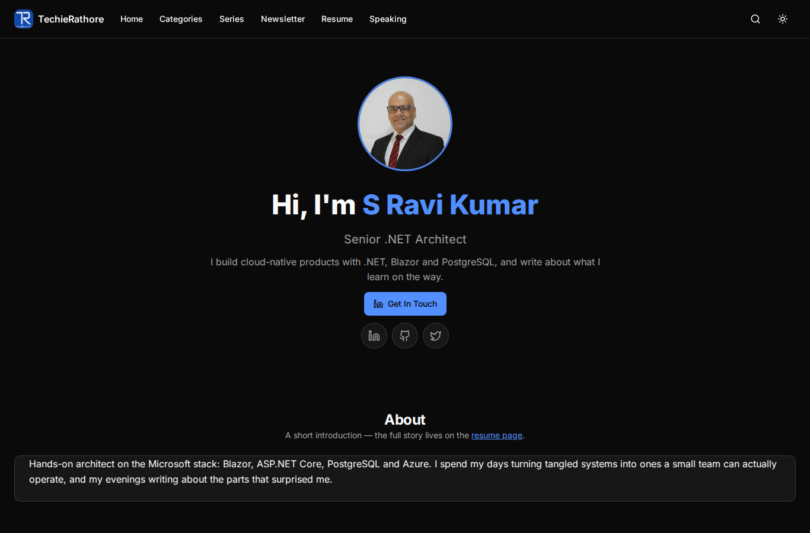
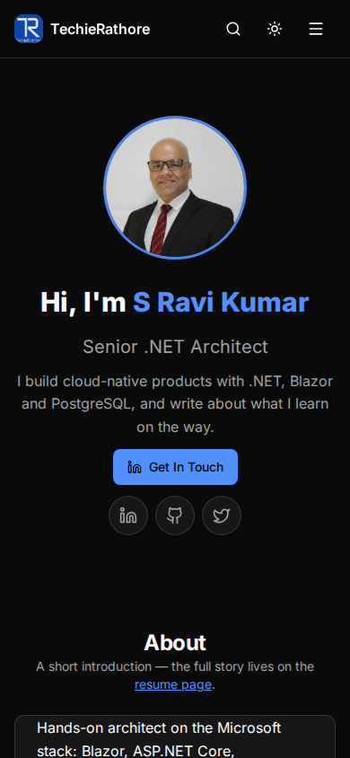
Runtime: renders. Seen 2026-11-02, anonymous: owner hero, featured card, latest posts. At 390 px wide: no horizontal overflow.
Roles: public
Call chain: Home.razor.cs:OnInitializedAsync → BlogSvc.GetPublishedPostsAsync → BlogPostRepo.GetPublishedPostsAsync → SelectPublishedSql (BlogPost JOIN BlogUser); featured block: BlogSvc.GetFeaturedPostAsync → BlogPostRepo.GetFeaturedPostAsync → SelectFeaturedSql (BlogPost, LIMIT 1); owner: BlogUserRepo.GetSiteOwnerAsync → SelectSiteOwnerSql (BlogUser)
| File and line | Function | Watch | Expected value |
|---|---|---|---|
source/BlogUI/Pages/BlogPages/Home.razor.cs:149 | LoadLatestPostsAsync | latestPosts | up to 3 published posts, newest first |
source/BlogUI/Pages/BlogPages/Home.razor.cs:173 | LoadFeaturedPostAsync | featuredPost | newest published, non-deleted post (COALESCE(PublishedOn, CreatedOn) DESC) |
source/BlogUI/Pages/BlogPages/Home.razor.cs:124 | LoadStatsAsync | ownerStats | owner's userstats rows, first 4 by DisplayOrder |
source/BlogUI/Pages/BlogPages/Home.razor:81 | markup | featuredPost.Slug | link to /post/{slug} |
source/BlogEngine/DbAccess/BlogPostRepo.cs:243 | SelectFeaturedSql | PublishedOn | selected, so the card date is the publish date |
Calculations on this screen: FeaturedExcerpt (Home.razor.cs:188) uses Abstract, else strips # * _ from PostContent and truncates to 220 characters; ReadingTimeCalculator.Calculate` for the read time.
Post view (/post/{slug}, alias /post/{slug}/{pageNumber})#
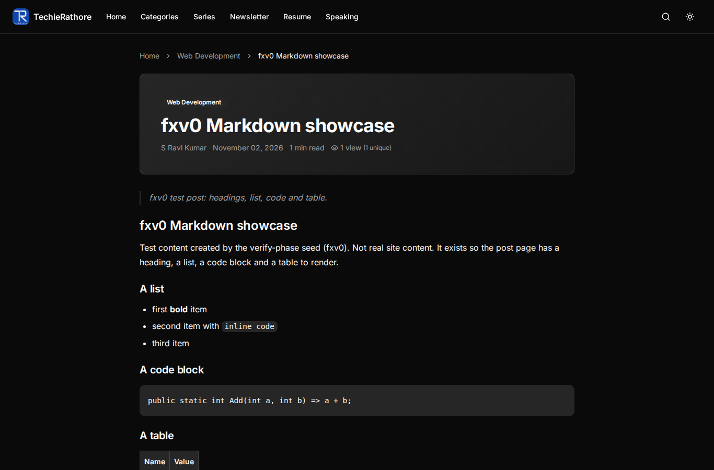
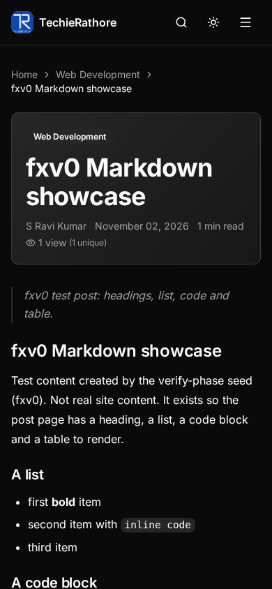
Runtime: renders. Seen 2026-11-02, anonymous: Markdown heading, list, code block and table; byline with category, read time, view count. At 390 px: no horizontal overflow.
Roles: public
Call chain: PostView.razor:LoadPost → BlogSvc.GetPostBySlugAsync → BlogPostRepo.GetBySlugAsync → SelectBySlugSql (BlogPost LEFT JOIN BlogUser, LEFT JOIN BlogSeries); comments: CommentSvc.GetCommentsByPostIdAsync → BlogCommentRepo.GetAllByIdAsync → blogcomment (approved only); byline: AnalyticsSvc.GetPostViewCountsAsync → PostViewRepo → PostViewCount
| File and line | Function | Watch | Expected value |
|---|---|---|---|
source/BlogUI/Pages/BlogPages/PostView.razor:450 | LoadPost | blogPost | the post by slug; notFound when missing or unpublished |
source/BlogUI/Pages/BlogPages/PostView.razor:597 | LoadCommentsAsync | comments | approved parent comments with their approved replies |
source/BlogUI/Pages/BlogPages/PostView.razor:570 | TrackVisitAndReadCountsAsync | viewCounts.TotalViews | rollup count; a new visit is queued, not written inline |
source/BlogUI/Components/CommentForm.razor:213 | OnSubmitAsync → CommentSvc.SubmitCommentAsync (CommentSvc.cs:146) | result | captcha and spam gate pass, email verification issued, row inserted as PendingVerification; not shown until confirmed and approved |
source/BlogUI/Components/PostRatingPanel.razor:226 | OnSubmitAsync → RatingSvc.SubmitRatingAsync (RatingSvc.cs:156) | result | captcha passes, PostRating upserted by email (PostRatingRepo.cs:243), verification issued if unverified |
Calculations on this screen: reading time via ReadingTimeCalculator; pagination splits PostContent at paginationWordCount (PostView.razor:642); GetCommentTotal counts comments plus replies.
Category archive (/category/{slug}, aliases /categories, /categories/{slug})#
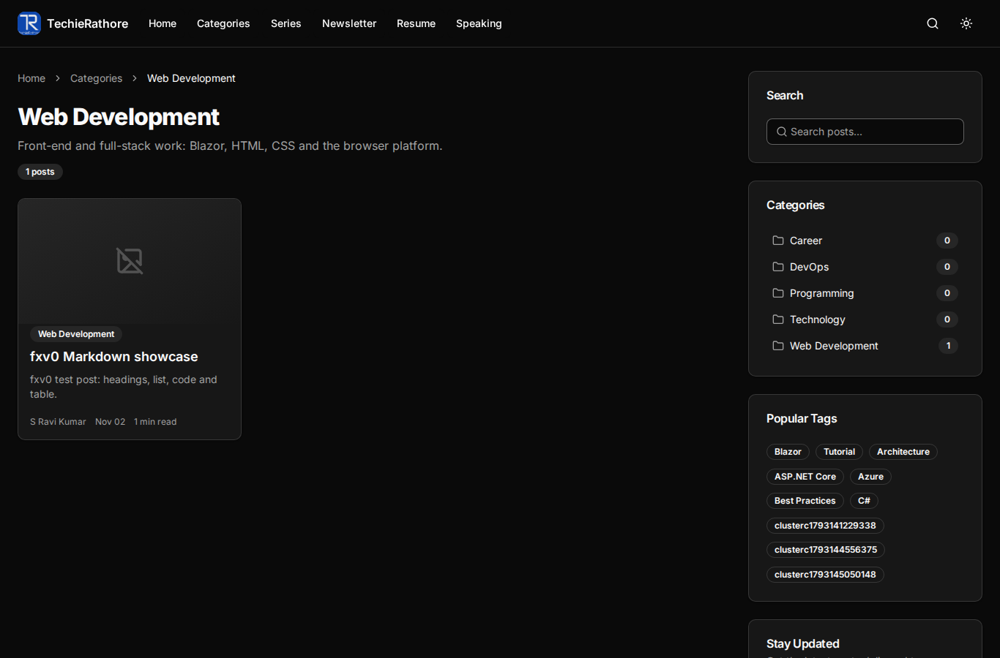
Runtime: renders. Seen 2026-11-02, anonymous, /category/web-development.
Roles: public
Call chain: CategoryArchive.razor:LoadCategory → CategorySvc.GetCategoryBySlugAsync (CategorySvc.cs:200) → CategoryRepo → Category; posts: BlogSvc.GetPostsByCategoryAsync → BlogPostRepo.GetPostsByCategoryAsync → SelectByCategorySql; count: BlogPostRepo.GetPostCountByCategoryAsync → CountByCategorySql
| File and line | Function | Watch | Expected value |
|---|---|---|---|
source/BlogUI/Pages/BlogPages/CategoryArchive.razor:198 | LoadCategory | category | category by slug; notFound when null |
source/BlogUI/Pages/BlogPages/CategoryArchive.razor:213 | LoadCategory | totalPosts | published post count for the category |
source/BlogUI/Pages/BlogPages/CategoryArchive.razor:217 | LoadCategory | posts | one page, PostsPerPage (from SiteSettingsService, line 179), newest first |
source/BlogUI/Pages/BlogPages/CategoryArchive.razor:187 | LoadCategory (no slug) | allCategories | CategorySvc.GetAllWithCountsAsync (CategoryRepo LEFT JOIN BlogPost) |
Calculations on this screen: totalPages = ceil(totalPosts / PageSize) (CategoryArchive.razor:214); excerpt is Abstract or the first 150 characters of PostContent.
Tag archive (/tag/{slug}, aliases /tags, /tags/{slug})#
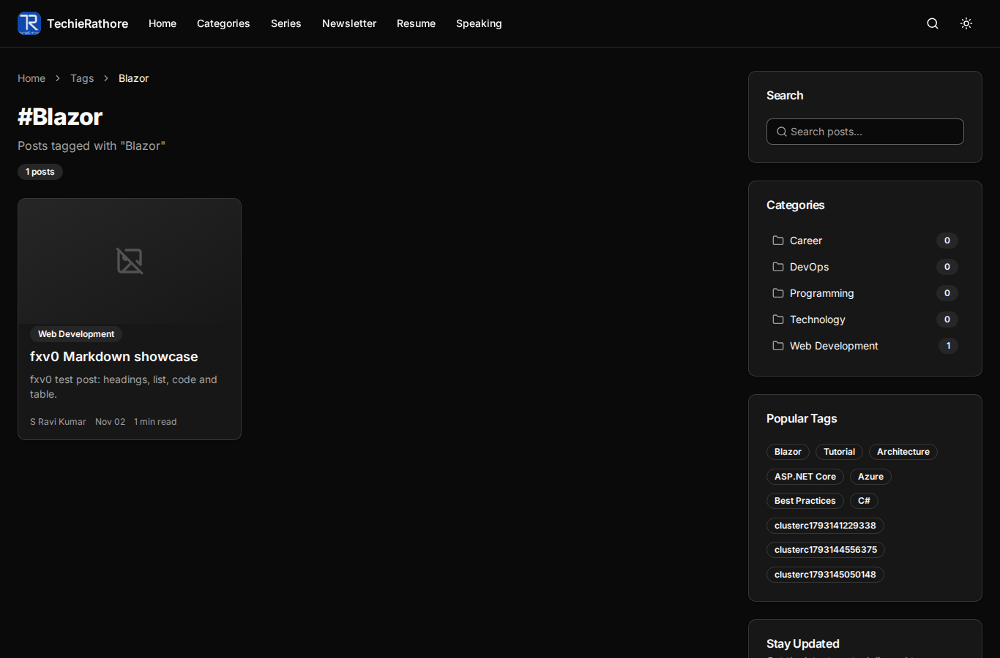
Runtime: renders. Seen 2026-11-02, anonymous, /tag/blazor.
Roles: public
Call chain: TagArchive.razor:LoadTag → TagSvc.GetTagBySlugAsync (TagSvc.cs:226) → BlogTagRepo.GetBySlugAsync → Tag; posts: TagSvc.GetPostsByTagAsync → BlogTagRepo → PostTag JOIN BlogPost; cloud: TagSvc.GetAllWithCountsAsync → BlogTagRepo.GetAllWithCountsAsync (BlogTagRepo.cs:40)
| File and line | Function | Watch | Expected value |
|---|---|---|---|
source/BlogUI/Pages/BlogPages/TagArchive.razor:197 | LoadTag | tagInfo | tag by slug; notFound when null |
source/BlogUI/Pages/BlogPages/TagArchive.razor:212 | LoadTag | totalPosts | published posts carrying the tag |
source/BlogUI/Pages/BlogPages/TagArchive.razor:216 | LoadTag | posts | one page of published posts with the tag |
source/BlogUI/Pages/BlogPages/TagArchive.razor:186 | LoadTag (no slug) | allTags | every tag with its PostCount; font size from GetTagSizeClass (line 285) |
Calculations on this screen: GetTagSizeClass buckets count into text-sm to text-xl by ratio to min and max PostCount; totalPages as on the category archive.
Series list and series view (/series, /series/{slug})#
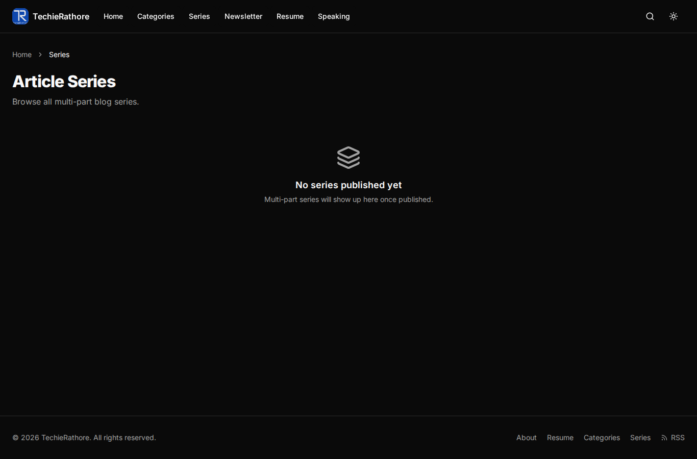
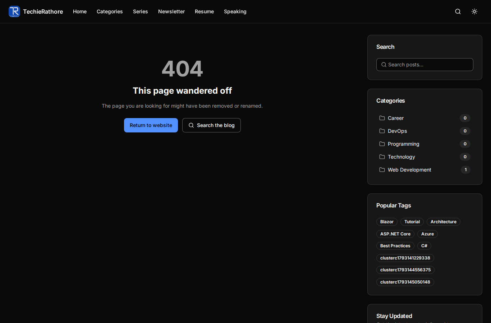
Runtime: renders empty. Seen 2026-11-02: this database has 0 series; /series/{slug} for an unknown slug shows the not-found page.
Roles: public (content managers Admin, Editor, Author also see draft parts, SeriesView.razor:280)
Call chain: SeriesView.razor:OnParametersSetAsync → IsContentManagerAsync → LoadDataAsync → SeriesSvc.GetAllWithCountsAsync (list); SeriesSvc.GetSeriesBySlugAsync(slug, includeDrafts) (SeriesSvc.cs:270) → BlogPostRepo.GetPublishedPostsBySeriesAsync → SelectPublishedBySeriesSql (anonymous) or BlogPostRepo.GetPostsBySeriesAsync → SelectBySeriesSql (content manager)
| File and line | Function | Watch | Expected value |
|---|---|---|---|
source/BlogUI/Pages/BlogPages/SeriesView.razor:309 | LoadDataAsync | allSeries | every series with its PostCount ({unresolved — count basis not traced}) |
source/BlogUI/Pages/BlogPages/SeriesView.razor:315 | LoadDataAsync | series | series by slug; SeriesId == 0 shows "Series not found" |
source/BlogEngine/Services/SeriesSvc.cs:284 | GetSeriesBySlugAsync | parts | draft parts only when includeDrafts is true |
source/BlogUI/Pages/BlogPages/SeriesView.razor:322 | LoadDataAsync | otherSeries | up to 3 other series |
source/BlogUI/Pages/BlogPages/SeriesView.razor:141 | markup | isLatest | the newest published part is marked "Latest" |
Calculations on this screen: isLatest = newest PublishedOn among published parts; Started is series.CreatedOn in MMM yyyy.
Search results (/search)#
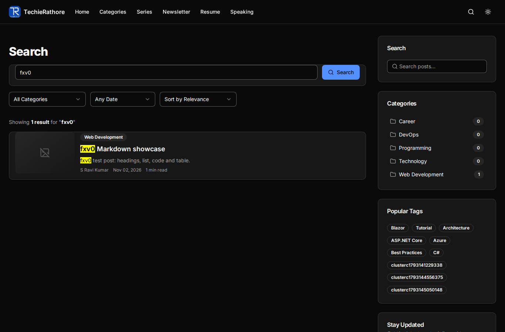
Runtime: renders. Seen 2026-11-02, anonymous, /search?q=fxv0.
Roles: public
Call chain: SearchResults.razor:OnInitializedAsync → CategorySvc.GetAllCategoriesAsync (filter list); PerformSearchAsync → BlogSvc.GetSearchResultCountAsync → BlogPostRepo.GetSearchResultCountAsync → SearchCountSql; BlogSvc.SearchPostsAsync (BlogSvc.cs:975) → BlogPostRepo.SearchPostsAsync → SearchSql (BlogPost ILIKE on Title, Abstract, PostContent, Tags, PostTag/Tag names)
| File and line | Function | Watch | Expected value |
|---|---|---|---|
source/BlogUI/Pages/BlogPages/SearchResults.razor:268 | PerformSearchAsync | totalResults | published matches for %query% |
source/BlogUI/Pages/BlogPages/SearchResults.razor:272 | PerformSearchAsync | posts | one page, newest first (COALESCE(PublishedOn, CreatedOn) DESC) |
source/BlogUI/Pages/BlogPages/SearchResults.razor:289 | PerformSearchAsync | Rating | intended: the post's star rating |
source/BlogUI/Pages/BlogPages/SearchResults.razor:43 | markup | categoryFilter | intended: narrows results by category |
Calculations on this screen: HighlightSearchTerms wraps matching words in <mark> after HTML-encoding (SearchResults.razor:335); excerpt capped at 200 characters, title at 160; EstimateReadTime via ReadingTimeCalculator.
About (/about)#
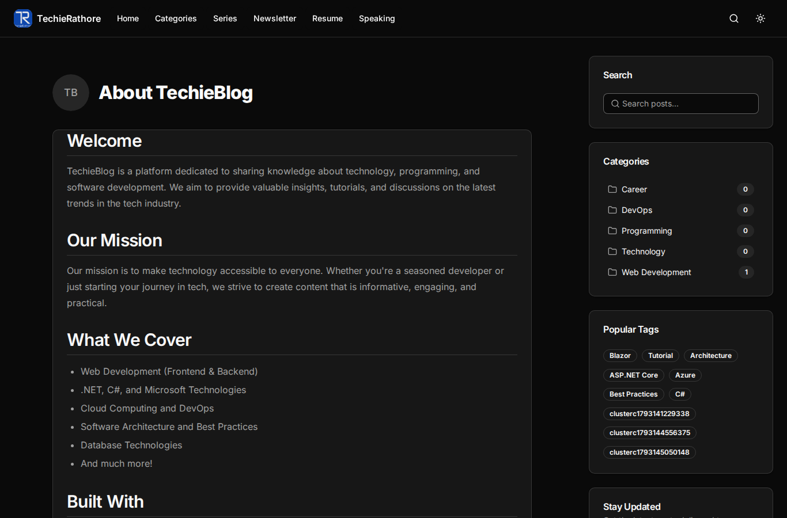
Runtime: renders. Seen 2026-11-02, anonymous.
Roles: public
Call chain: none (static markup; StackChips is a constant array, About.razor:117)
| File and line | Function | Watch | Expected value |
|---|---|---|---|
source/BlogUI/Pages/BlogPages/About.razor:117 | StackChips | StackChips.Length | 7 technology badges |
source/BlogUI/Pages/BlogPages/About.razor:81 | markup | about-github link | points to https://github.com (generic, not the owner's profile) |
source/BlogUI/Pages/BlogPages/About.razor:102 | markup | about-resume link | /resume |
Calculations on this screen: none
Not found (/404)#

Runtime: renders. Seen 2026-11-02, anonymous: "This page wandered off".
Roles: public
Call chain: none (static markup). Reached for any unmatched URL by UseStatusCodePagesWithReExecute(NotFoundPage.Path) (source/TechieBlog/Program.cs:620), which keeps HTTP 404.
| File and line | Function | Watch | Expected value |
|---|---|---|---|
source/BlogUI/Pages/AdminPages/404Page.razor:46 | @page "/404" | route | the only route for this page; renaming it breaks the re-execution |
source/TechieBlog/Program.cs:620 | UseStatusCodePagesWithReExecute | status | HTTP 404 with this page rendered |
Calculations on this screen: none
Resume (/resume)#
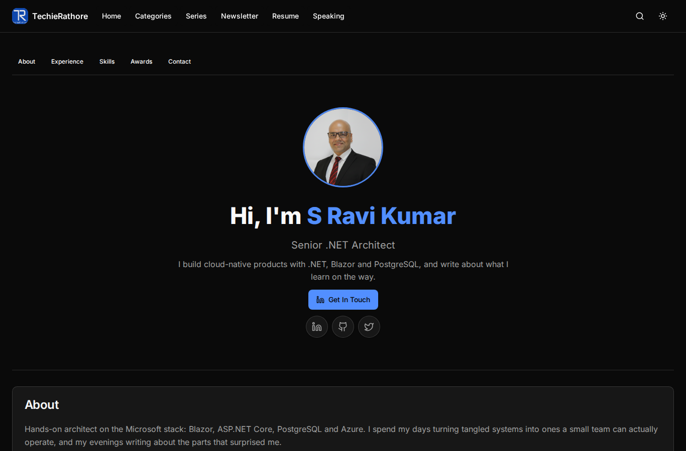
Runtime: renders. Seen 2026-11-02, anonymous: site owner hero and sections.
Roles: public
Call chain: ResumePage.razor.cs:OnInitializedAsync → LoadSiteOwner → BlogUserRepo.GetSiteOwnerAsync (BlogUserRepo.cs:383) → SelectSiteOwnerSql (BlogUser); child sections (ResumeExperience, ResumeSkills, ResumeAwards, ResumeStats) {unresolved — not traced in this pass}
| File and line | Function | Watch | Expected value |
|---|---|---|---|
source/BlogUI/Pages/ResumePage.razor.cs:47 | LoadSiteOwner | siteOwner | the IsSiteOwner user; null renders "Resume not available" |
source/BlogUI/Pages/ResumePage.razor:41 | markup | siteOwner.ResumeEnabled | false renders "Resume not published" |
source/BlogUI/Components/Resume/ResumeHero.razor:81 | markup | User.CVFilePath | non-blank shows "Download CV" with href = stored path |
Calculations on this screen: none
Speaker profile (/speaker-profile)#
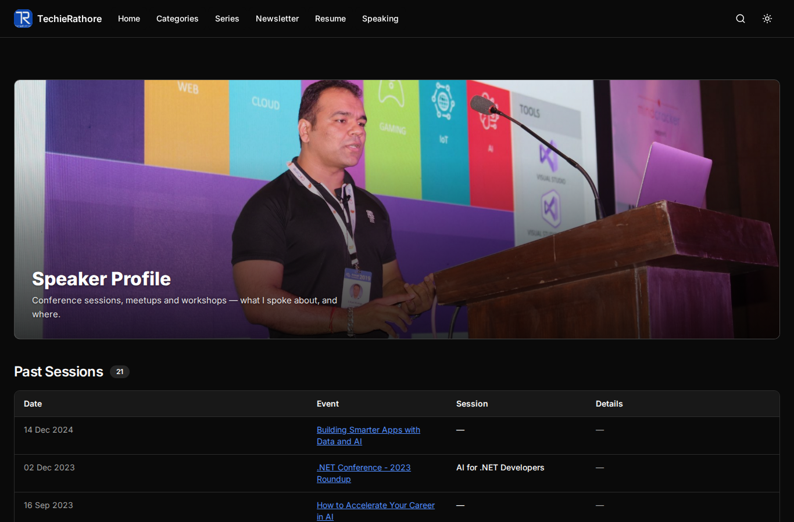
Runtime: renders. Seen 2026-11-02, anonymous.
Roles: public
Call chain: SpeakerProfile.razor:OnInitializedAsync → LoadSessionsAsync → BlogUserRepo.GetSiteOwnerAsync → SelectSiteOwnerSql (BlogUser); UserEventRepo.GetByUserAndTypeAsync (UserEventRepo.cs:159) → userevents filtered by type Speaking
| File and line | Function | Watch | Expected value |
|---|---|---|---|
source/BlogUI/Pages/BlogPages/SpeakerProfile.razor:238 | LoadSessionsAsync | sessions | owner's Speaking rows |
source/BlogUI/Pages/BlogPages/SpeakerProfile.razor:241 | LoadSessionsAsync | upcomingSessions | IsUpcoming rows (UserEvent.cs:133), soonest first |
source/BlogUI/Pages/BlogPages/SpeakerProfile.razor:246 | LoadSessionsAsync | pastSessions | the rest, newest first |
source/BlogUI/Pages/BlogPages/SpeakerProfile.razor:84 | markup | upcomingSessions.Count | section omitted when zero |
Calculations on this screen: IsUpcoming is EventDate.Date >= DateTime.Today (not a stored flag); FormatDate shows "dd MMM yyyy".
Newsletter archive (/newsletters)#
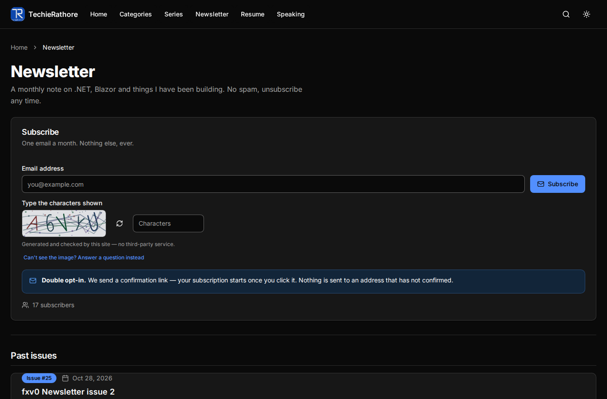
Runtime: renders. Seen 2026-11-02, anonymous: archive of sent issues.
Roles: public
Call chain: Newsletters.razor.cs:OnInitializedAsync → SubscriberRepo.GetActiveSubscribersAsync → Subscriber; LoadPageAsync → NewsletterSvc.GetPublishedIssuesAsync (NewsletterSvc.cs:392) → {unresolved — NewsletterRepo SQL not read}
| File and line | Function | Watch | Expected value |
|---|---|---|---|
source/BlogUI/Pages/BlogPages/Newsletters.razor.cs:124 | LoadSubscriberCountAsync | confirmedSubscriberCount | count of active subscribers; 0 on failure |
source/BlogUI/Pages/BlogPages/Newsletters.razor.cs:98 | LoadPageAsync | archivePage.Items | sent, public, slugged issues, newest first |
source/BlogUI/Pages/BlogPages/Newsletters.razor.cs:157 | BuildIssueNumbers | numbers[...] | TotalCount - firstIndex - offset (oldest is 1) |
Calculations on this screen: issue number is the send-order rank (BuildIssueNumbers, line 150); excerpt is Summary or the first 200 characters of stripped Content (GetExcerpt, line 195).
Newsletter issue (/newsletter/{slug})#
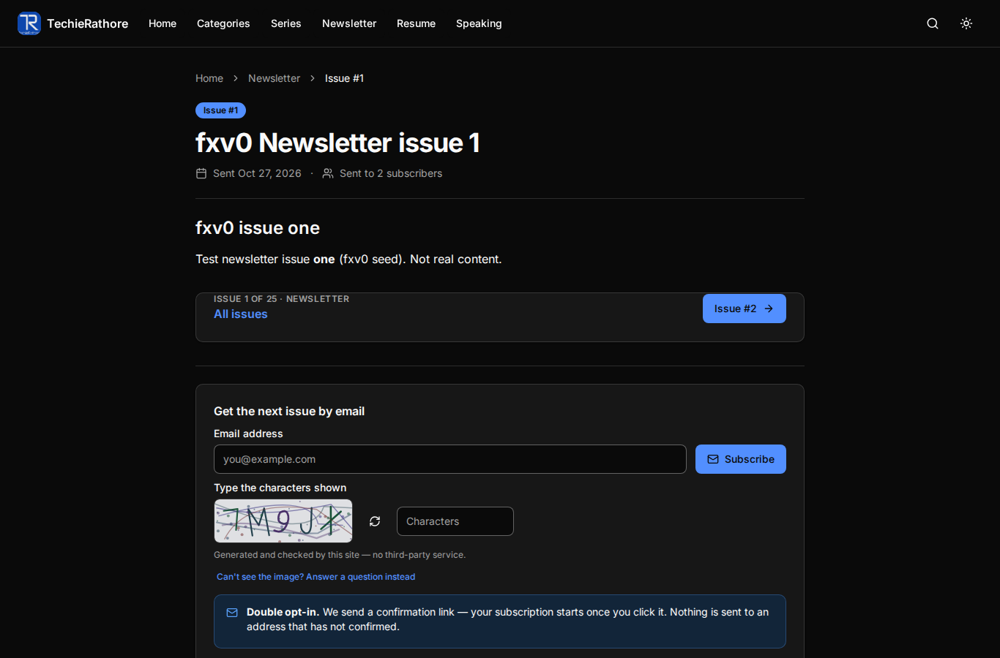
Runtime: renders. Seen 2026-11-02, anonymous, /newsletter/fxv0-newsletter-issue-1.
Roles: public
Call chain: NewsletterView.razor.cs:OnParametersSetAsync → LoadIssueAsync → NewsletterSvc.GetPublishedBySlugAsync (NewsletterSvc.cs:428) → {unresolved — NewsletterRepo SQL not read}; prev/next: NewsletterSvc.GetNavigationAsync; rank: ResolveIssueNumberAsync (NewsletterView.razor.cs:138) pages GetPublishedIssuesAsync
| File and line | Function | Watch | Expected value |
|---|---|---|---|
source/BlogUI/Pages/BlogPages/NewsletterView.razor.cs:105 | LoadIssueAsync | resolved | sent, public issue; failure calls Navigation.NotFound() (line 109) |
source/BlogUI/Pages/BlogPages/NewsletterView.razor.cs:114 | LoadIssueAsync | renderedBody | MarkdownRenderer.ToHtml(issue.Content) |
source/BlogUI/Pages/BlogPages/NewsletterView.razor.cs:115 | LoadIssueAsync | navigation | previous and next issues by send time |
source/BlogUI/Pages/BlogPages/NewsletterView.razor.cs:161 | ResolveIssueNumberAsync | issueNumber | rank by send order; totalIssues if scan bound is hit |
Calculations on this screen: issueNumber rank (line 161); previous/next labels are issueNumber ∓ 1.
Email confirmation (/verify/{token})#
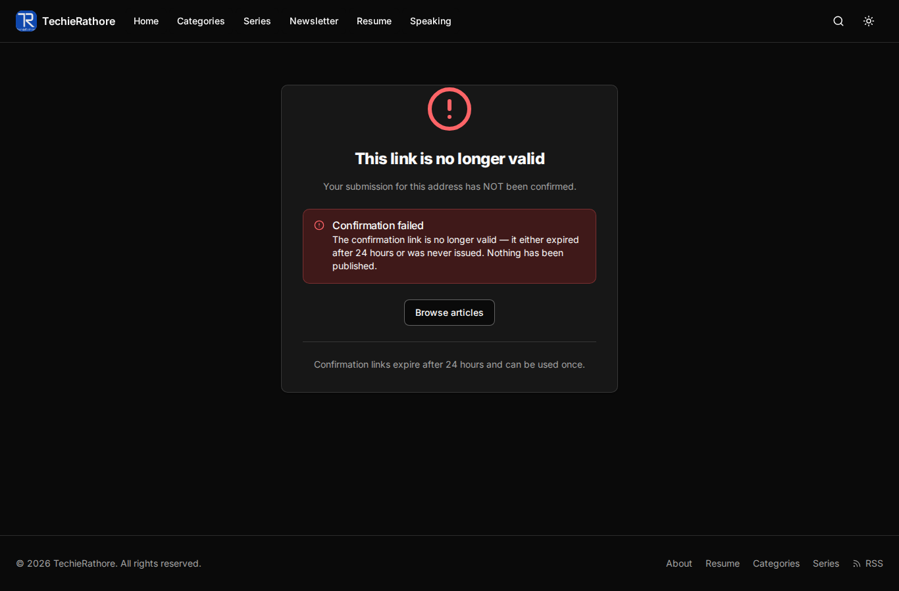
Runtime: renders the invalid-link state. Seen 2026-11-02, with a deliberately invalid token (a real one would confirm a subscription).
Roles: public
Call chain: VerifyEmail.razor.cs:OnAfterRenderAsync (first interactive render) → CheckTokenAsync → EmailVerificationTokenRepo.GetByTokenAsync (EmailVerificationToken); valid row: IEmailVerificationService.ConsumeAsync (EmailVerificationSvc.cs:162) → ConsumeEmailVerificationToken(@pToken) (EmailVerificationTokenRepo.cs:60) → promotes comment, rating or Subscriber target
| File and line | Function | Watch | Expected value |
|---|---|---|---|
source/BlogUI/Pages/BlogPages/VerifyEmail.razor.cs:236 | CheckTokenAsync | row | token row read without redeeming it |
source/BlogUI/Pages/BlogPages/VerifyEmail.razor.cs:247 | CheckTokenAsync | row.IsUsed | used tokens show "Already confirmed" and are never consumed |
source/BlogUI/Pages/BlogPages/VerifyEmail.razor.cs:254 | CheckTokenAsync | row.ExpiresOn | past 24 hours shows "no longer valid" with resend |
source/BlogUI/Pages/BlogPages/VerifyEmail.razor.cs:285 | ConsumeTokenAsync | result | success yields Confirmed or SubscriptionConfirmed |
Calculations on this screen: expiry check ExpiresOn <= UtcNow; ConfirmationSummary wording by purpose.
Unsubscribe (/unsubscribe/{token})#
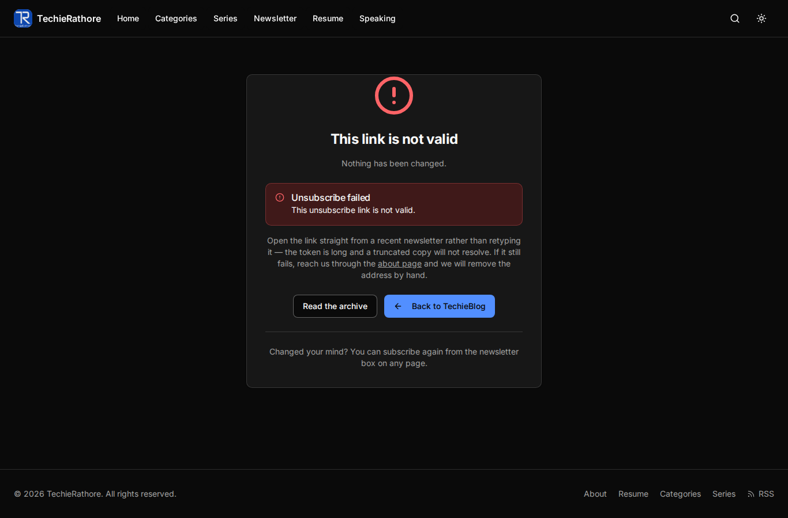
Runtime: renders the invalid-link state. Seen 2026-11-02, with a deliberately invalid token.
Roles: public, anonymous by design (Unsubscribe.razor:9). The route carries a token, so bare /unsubscribe is not routed.
Call chain: Unsubscribe.razor.cs:OnAfterRenderAsync → ApplyTokenAsync → SubscriberSvc.UnsubscribeByTokenAsync (SubscriberSvc.cs:478) → SubscriberRepo → UnsubscribeToken (read at line 189; UPDATE UnsubscribeToken SET UsedOn line 209) and UPDATE Subscriber (line 213)
| File and line | Function | Watch | Expected value |
|---|---|---|---|
source/BlogUI/Pages/BlogPages/Unsubscribe.razor.cs:178 | ApplyTokenAsync | result | failure shows the service's vague message |
source/BlogUI/Pages/BlogPages/Unsubscribe.razor.cs:188 | ApplyTokenAsync | State | AlreadyUnsubscribed if the outcome says so, else Unsubscribed |
source/BlogEngine/DbAccess/SubscriberRepo.cs:209 | consume SQL | UsedOn | set on first use; a replay changes nothing |
Calculations on this screen: none
RSS feed page (/rss)#
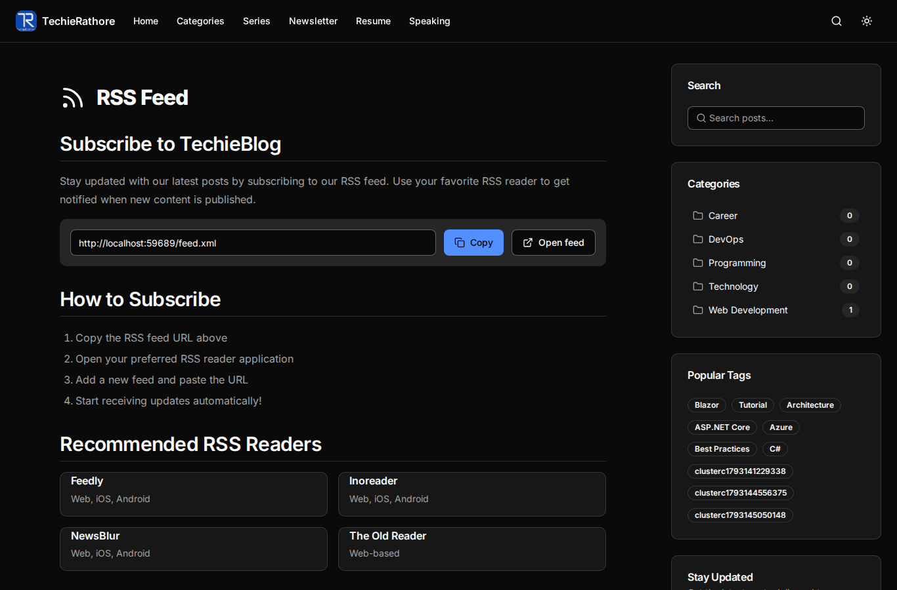
Runtime: renders. Seen 2026-11-02, anonymous.
Roles: public
Call chain: RssFeed.razor:OnInitializedAsync → BlogSvc.GetPublishedPostsAsync(5, 0) → BlogPostRepo.GetPublishedPostsAsync → SelectPublishedSql; the machine feed is a separate endpoint: source/TechieBlog/Program.cs:775 (RssFeedSvc.FeedPath = "/feed.xml", RssFeedSvc.cs:91) and Program.cs:776 (/rss.xml), both to RssFeedSvc.GenerateFeedAsync. /rss itself is HTML.
| File and line | Function | Watch | Expected value |
|---|---|---|---|
source/BlogUI/Pages/BlogPages/RssFeed.razor:148 | OnInitializedAsync | rssUrl | {BaseUri}feed.xml |
source/BlogUI/Pages/BlogPages/RssFeed.razor:156 | LoadRecentPostsAsync | recentPosts | 5 newest published posts |
source/TechieBlog/Program.cs:747 | /sitemap.xml endpoint | response | SitemapSvc.GenerateSitemapAsync, application/xml |
source/TechieBlog/Program.cs:779 | /robots.txt endpoint | response | Allow: / and Sitemap: {SiteSettings:BaseUrl}/sitemap.xml (lines 780-786) |
Calculations on this screen: dates use PublishedOn ?? CreatedOn (RssFeed.razor:113).
Sign in (/login, aliases /LoginPage, /LoginPage/{PageCode})#
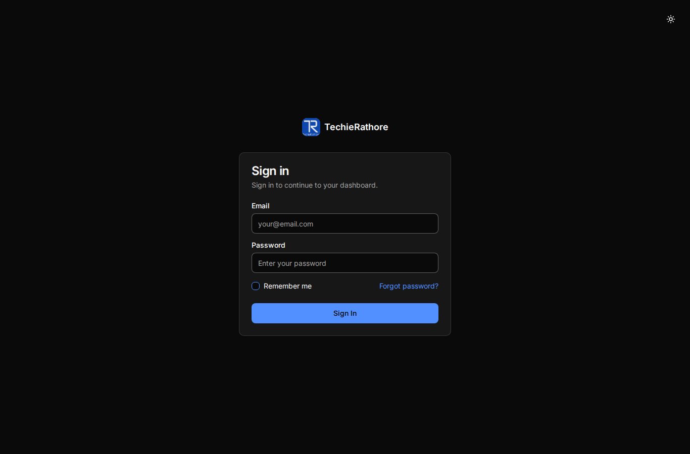
Runtime: renders. Seen 2026-11-02. All four test users signed in; landings: Admin and Editor /admin, Author /BlogsList, Contributor /.
Roles: public (no [Authorize]); a signed-in visitor is redirected away in OnInitializedAsync (source/BlogUI/Pages/AdminPages/LoginPage.razor.cs:73-82)
Call chain: LoginPage.razor.cs:ValidateUser → TechieBlog/Services/AuthService.cs:LoginAsync (host IAuthService) → AuthSvc.AppLoginAsync → UserCredentialRepo.GetByEmailAsync → GetUserCredentialByEmail() on BlogUser (source/BlogEngine/DbAccess/UserCredentialRepo.cs:34,71) → on success loginlog (LoginLogRepo.cs:86) and userlogins (UserLoginRepo.cs:52)
| File and line | Function | Watch | Expected value |
|---|---|---|---|
source/BlogUI/Pages/AdminPages/LoginPage.razor.cs:136 | ValidateUser | validatedUser | AppUser on valid credentials; null sets "Invalid email or password." (:156) |
source/TechieBlog/Services/AuthService.cs:91 | LoginAsync | user.LoginPass | encrypted before AppLoginAsync (:95); plaintext stays in the host adapter |
source/BlogEngine/Services/AuthSvc.cs:161 | AppLoginAsync | loginThrottle.IsBlocked | locked account returns null and writes one LoginLog row (:166) |
source/BlogModel/Common/PasswordHasher.cs:163 | Verify | outcome | Failed refuses (AuthSvc.cs:280); SuccessNeedsRehash upgrades the hash (:284) |
source/BlogEngine/Services/AuthSvc.cs:302 | AuthenticateAsync | user.MustChangePassword | copied from the credential row; LoginPage.razor.cs:190 then routes to /change-password |
Calculations on this screen: PBKDF2-HMAC-SHA256 with 210,000 iterations (PasswordHasher.cs:61); access token exp 60 min and refresh window 14 days (SessionPolicy.cs:54,73).
Forgot password (/forgot-password)#
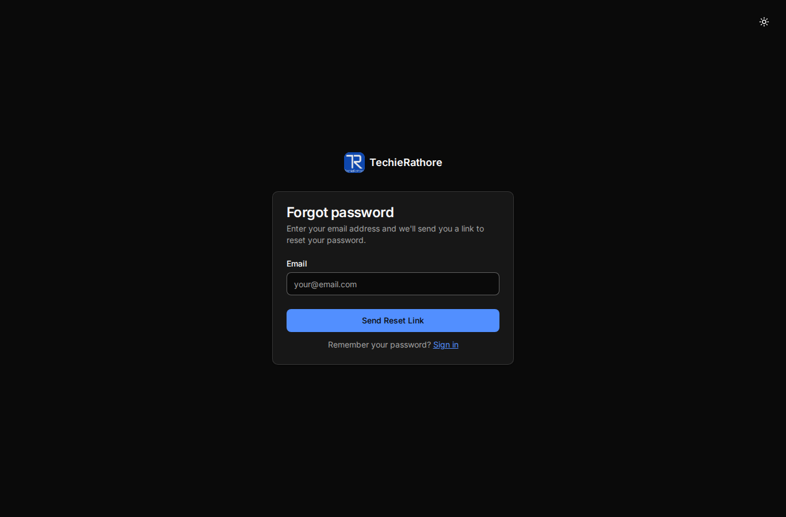
Runtime: renders. Seen 2026-11-02, anonymous.
Roles: public (no [Authorize])
Call chain: ForgotPasswordPage.razor:HandleSubmit → AuthSvc.RequestPasswordResetAsync (source/BlogEngine/Services/AuthSvc.cs:847) → BlogUserRepo.GetUserByEmailAsync (source/BlogEngine/DbAccess/BlogUserRepo.cs:299, GetUserByEmail()) → PasswordResetTokenRepo.InsertAsync (PasswordResetTokenRepo.cs:148, InsertPasswordResetToken()) → PasswordResetToken; mail via IEmailService
| File and line | Function | Watch | Expected value |
|---|---|---|---|
source/BlogUI/Pages/AdminPages/ForgotPasswordPage.razor:91 | HandleSubmit | message | same text whether or not the address exists (:107) |
source/BlogEngine/Services/AuthSvc.cs:859 | RequestPasswordResetAsync | result | unknown address returns success with an empty token (:864) |
source/BlogEngine/Services/AuthSvc.cs:897 | PersistResetTokenAsync | ExpiresAt | UTC now + 24 h (:905) |
source/BlogEngine/Services/AuthSvc.cs:869 | RequestPasswordResetAsync | BuildResetUrl(...) | {baseUrl}/reset-password/{token} |
Calculations on this screen: token is 32 random bytes, base64url without padding (AuthSvc.cs:1008-1014).
Reset password (/reset-password, /reset-password/{Token})#
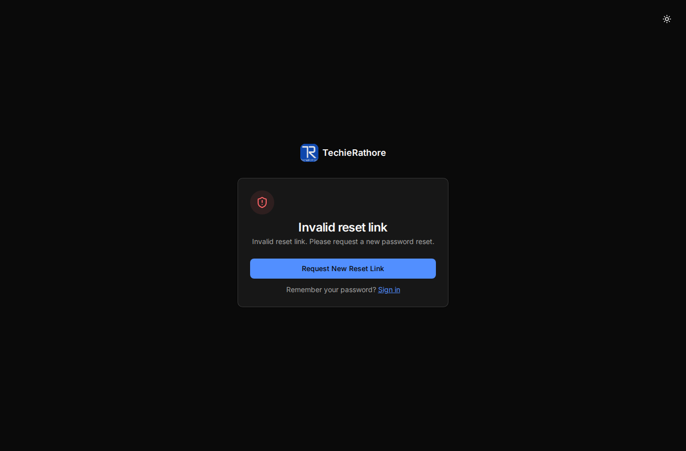
Runtime: renders the invalid-link state. Seen 2026-11-02, with a deliberately invalid token.
Roles: public (no [Authorize]); the token is the credential
Call chain: ResetPasswordPage.razor:OnInitializedAsync → AuthSvc.ValidateResetTokenAsync (source/BlogEngine/Services/AuthSvc.cs:985) → PasswordResetTokenRepo.GetByTokenAsync (PasswordResetTokenRepo.cs:86) → PasswordResetToken; submit: ResetPasswordPage.razor:HandleSubmit → AuthSvc.ResetPasswordAsync (AuthSvc.cs:939) → UserCredentialRepo.UpdatePasswordHashAsync (UserCredentialRepo.cs:121, UpdateUserPassword()) → PasswordResetTokenRepo.MarkUsedAsync (PasswordResetTokenRepo.cs:111, MarkPasswordResetTokenUsed())
| File and line | Function | Watch | Expected value |
|---|---|---|---|
source/BlogUI/Pages/AdminPages/ResetPasswordPage.razor:136 | OnInitializedAsync | tokenInvalid | true for an empty token or a failed ValidateResetTokenAsync (unknown, expired, used) |
source/BlogUI/Pages/AdminPages/ResetPasswordPage.razor:165 | HandleSubmit | model.Password vs ConfirmPassword | mismatch shows "Passwords do not match." and stops |
source/BlogEngine/Services/AuthSvc.cs:950 | ResetPasswordAsync | PasswordValidator.Validate | rejects weak passwords before any write |
source/BlogEngine/Services/AuthSvc.cs:958 | ResetPasswordAsync | mustChangePassword argument | false: the user has chosen a password |
source/BlogUI/Pages/AdminPages/ResetPasswordPage.razor:190 | HandleSubmit | navigation URL | /login?message=password-reset (nothing on /login reads it; see Defects) |
Calculations on this screen: password policy from PasswordValidator (min 8, upper, lower, digit); a token is single use (MarkUsedAsync).
Change password (/change-password)#
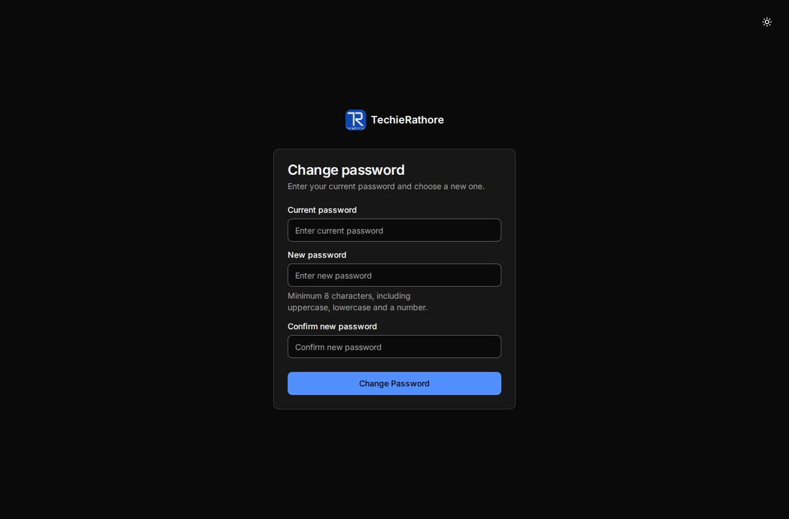
Runtime: renders. Seen 2026-11-02, as user 3 (Author); reached directly because the account is not flagged MustChangePassword on this database.
Roles: any signed-in role (@attribute [Authorize], source/BlogUI/Pages/AdminPages/ChangePasswordPage.razor:22)
Forced-change wall: source/BlogUI/Components/ForcePasswordChangeGuard.razor:89 EnforceAsync sends a flagged user to /change-password (navigate at :114). It is mounted once in source/BlogUI/Routes.razor:17 and re-checks on OnAfterRenderAsync (:36), OnLocationChanged (:54) and OnAuthenticationStateChanged (:67). Login-time gate: LoginPage.razor.cs:190.
Call chain: ChangePasswordPage.razor:HandleSubmit → AuthSvc.ChangePasswordAsync (source/BlogEngine/Services/AuthSvc.cs:1137) → UserCredentialRepo.GetByUserIdAsync (UserCredentialRepo.cs:96, GetUserCredentialById()) → UpdatePasswordHashAsync (UserCredentialRepo.cs:121) → BlogUser (UpdateUserPassword()); then CustomAuthStateProvider.RefreshAuthenticationStateAsync (source/BlogUI/Common/CustomAuthStateProvider.cs:347)
| File and line | Function | Watch | Expected value |
|---|---|---|---|
source/BlogUI/Pages/AdminPages/ChangePasswordPage.razor:131 | OnInitializedAsync | isForced | true when the MustChangePassword claim equals "true" (:136-139) |
source/BlogEngine/Services/AuthSvc.cs:1152 | ChangePasswordAsync | PasswordHasher.Verify(currentPassword) | Failed returns "Current password is incorrect" |
source/BlogEngine/Services/AuthSvc.cs:1155 | ChangePasswordAsync | PasswordValidator.Validate | strength rule; the only place it is enforced for this screen |
source/BlogUI/Pages/AdminPages/ChangePasswordPage.razor:198 | HandleSubmit | RefreshAuthenticationStateAsync | rebuilds the principal so the cleared flag reaches the guard |
source/BlogUI/Pages/AdminPages/ChangePasswordPage.razor:202 | HandleSubmit | NavigateTo | RoleLandingRoutes.ResolveFor(signedInRole) after 1.2 s |
Calculations on this screen: none beyond the confirmation match (ChangePasswordPage.razor:167).
Access denied (/access-denied)#
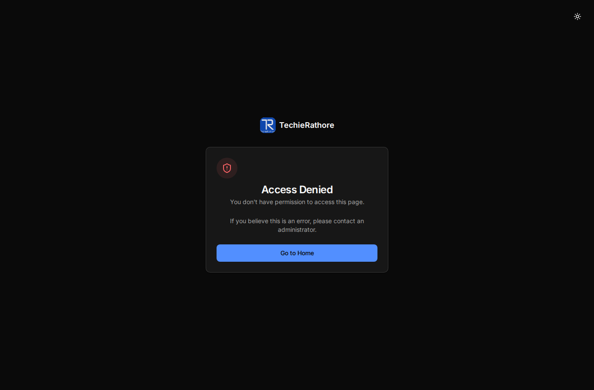
Runtime: renders. Seen 2026-11-02: user 4 (Contributor) asking for /admin lands on /access-denied.
Roles: public route (no [Authorize]). Reached by the NotAuthorized fragment in source/BlogUI/Routes.razor:51-60, then moved to the real route by OnAfterRender.
Call chain: AccessDenied.razor:OnInitializedAsync → RoleLandingRoutes.ResolveFor(role claim) (source/BlogModel/Common/RoleLandingRoutes.cs) → AccessDenied.razor:OnAfterRender → NavigationManager.NavigateTo("/access-denied"); no data access
| File and line | Function | Watch | Expected value |
|---|---|---|---|
source/BlogUI/Pages/AccessDenied.razor:99 | OnInitializedAsync | LandingRoute | the role's landing route, / when the role has none |
source/BlogUI/Pages/AccessDenied.razor:93 | HasStaffLanding | bool | true shows "Go to Dashboard" |
source/BlogUI/Pages/AccessDenied.razor:130 | OnAfterRender | RendererInfo.IsInteractive | navigates only on the first interactive render, from the NotAuthorized fragment |
source/BlogUI/Pages/AccessDenied.razor:147 | IsOnOwnRoute | path | path-only compare, so no redirect loop |
Calculations on this screen: none.
Post editor (/ManagePost, aliases /ManagePost/{PageId})#
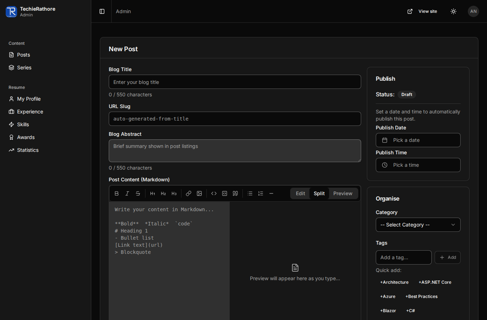
Runtime: renders. Seen 2026-11-02, as user 3 (Author), new post. Also seen: the author opened /ManagePost/521, a post owned by user 1, as a fully editable "Edit Post" form (Known issues, D3).
Roles: AuthorOrAbove (source/BlogUI/Pages/AdminPages/ManagePost.razor:14). The page does not check ownership of the loaded post (see Defects).
Call chain: ManagePost.razor.cs:OnParametersSetAsync → LoadExistingPostAsync → BlogSvc.GetSinglePostAsync (source/BlogEngine/Services/BlogSvc.cs:213) → BlogPostRepo.GetSingleAsync (SelectByIdSql, BlogPost); save: ManagePost.razor.cs:SaveWithPublishState → BlogSvc.PublishPostAsync or SaveDraftAsync → SavePostAsync (BlogSvc.cs:632) → UpdatePostAsync (:571) or CreatePostAsync → BlogPostRepo (BlogPost UPDATE at BlogPostRepo.cs:218-232, INSERT at :210); tags: TagSvc.SetTagsForPostAsync (TagSvc.cs:559) → BlogTagRepo.SetTagsForPostAsync (BlogTagRepo.cs:436, DELETE/INSERT on PostTag)
| File and line | Function | Watch | Expected value |
|---|---|---|---|
source/BlogUI/Pages/AdminPages/ManagePost.razor.cs:257 | OnParametersSetAsync | PageObj | the routed post; PageId <= 0 gives a new BlogPost with Published = false (:279-282) |
source/BlogUI/Pages/AdminPages/ManagePost.razor.cs:633 | SaveWithPublishState | result.IsSuccess | post saved, tags re-synced; publish navigates to /BlogsList after 500 ms (:726-727) |
source/BlogEngine/Services/BlogSvc.cs:694 | SaveDraftAsync | post.ScheduledPublishOn | expected cleared on a draft save; it is not cleared (see Defects) |
source/BlogEngine/Services/BlogSvc.cs:599 | UpdatePostAsync | post.Slug | EnsureSlug then ResolveUniqueSlugAsync (:599-602) |
source/BlogUI/Pages/AdminPages/ManagePost.razor.cs:518 | AddNewTagAsync | tag | TagSvc.GetOrCreateTagAsync (TagSvc.cs:308) returns an existing or new tag |
Calculations on this screen: TitleCharCountLabel and AbstractCharCountLabel (ManagePost.razor.cs:87-124, limits from BlogPost.TitleMaxLength / AbstractMaxLength); slug from SlugGenerator.GenerateSlug (source/BlogEngine/Common/SlugGenerator.cs:76) at ManagePost.razor.cs:425,477,677,834; scheduled time is local, converted to UTC at :838.
Posts list (/BlogsList)#
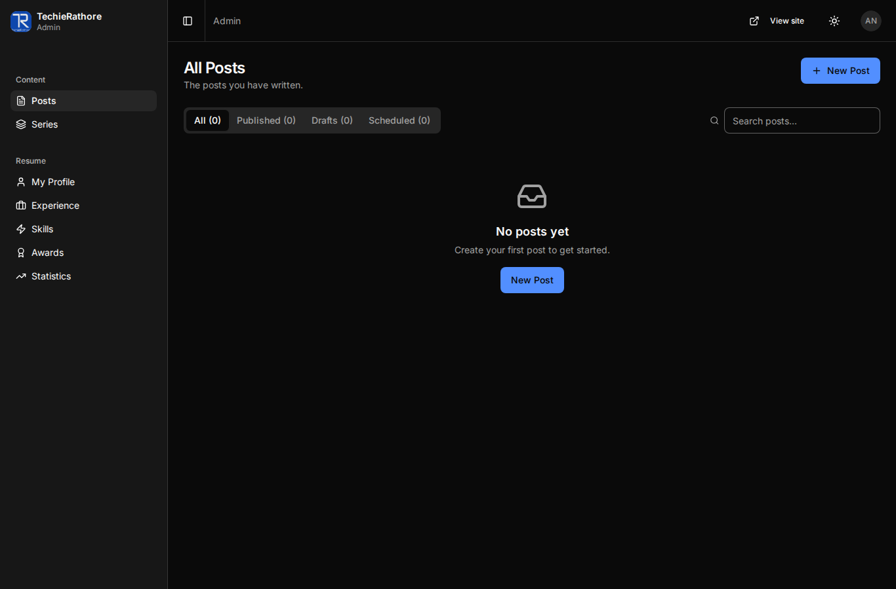
Runtime: renders empty. Seen 2026-11-02, as user 3 (Author): the author owns no live post on this database. As user 1 (Admin) it lists 3 posts, and typing in the search box crashes the page (Known issues, TR-077).
Roles: AuthorOrAbove (source/BlogUI/Pages/AdminPages/BlogsList.razor:14). Admin or Editor see every post; other roles see their own.
Call chain: BlogsList.razor.cs:OnInitializedAsync (:112) → LoadPostsAsync (:133) → BlogSvc.GetAllPostsAsync (source/BlogEngine/Services/BlogSvc.cs:186) → BlogPostRepo.GetAllAsync (SelectAllSql, BlogPostRepo.cs:112, FROM BlogPost) or GetAllByIdAsync (SelectAllByUserSql, :127, WHERE p.UserID = @UserID)
| File and line | Function | Watch | Expected value |
|---|---|---|---|
source/BlogUI/Pages/AdminPages/BlogsList.razor.cs:112 | OnInitializedAsync | isAdminOrEditor | true when the principal is in Admin or Editor |
source/BlogUI/Pages/AdminPages/BlogsList.razor.cs:135 | LoadPostsAsync | posts | every post for Admin or Editor; the caller's own posts otherwise |
source/BlogUI/Pages/AdminPages/BlogsList.razor.cs:154 | ApplyFilter | filtered | status tab: published, scheduled (IsScheduled), draft; then search over Title, Slug, BlogWriter |
source/BlogUI/Pages/AdminPages/BlogsList.razor.cs:217 | NavigateToPreviewAsync | post.Published | published posts open /post/{slug} externally; drafts go to /admin/preview/{id} |
source/BlogUI/Pages/AdminPages/BlogsList.razor.cs:320 | CancelScheduleAsync | BlogService.CancelScheduleAsync | BlogSvc.cs:929 clears the schedule and keeps the post a draft |
Calculations on this screen: status and search filters in ApplyFilter; the tab counts are derived from the same list.
Draft preview (/admin/preview/{PostId})#
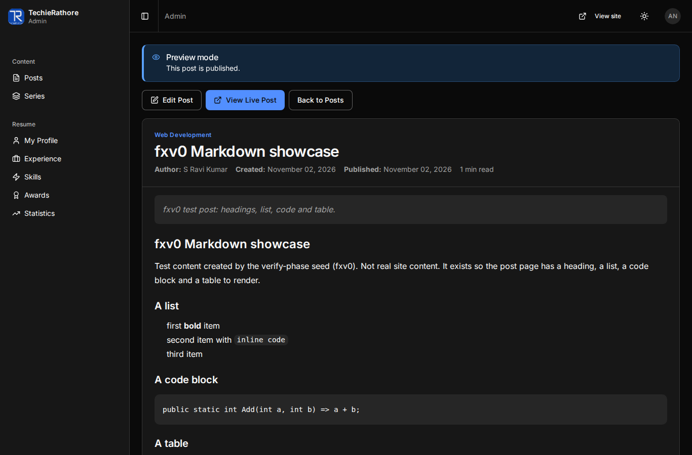
Runtime: renders. Seen 2026-11-02, as user 3 (Author), /admin/preview/521, a post owned by user 1.
Roles: AuthorOrAbove (source/BlogUI/Pages/AdminPages/PreviewPost.razor:11). No ownership check on the post.
Call chain: PreviewPost.razor:OnInitializedAsync (:212) → LoadPost (:218) → BlogSvc.GetSinglePostAsync (BlogSvc.cs:213) → BlogPostRepo.GetSingleAsync (BlogPost); tags: TagSvc.GetTagsForPostAsync (TagSvc.cs:524) → PostTag; publish: HandlePublish (:243) → BlogSvc.QuickPublishAsync (BlogSvc.cs:798) → BlogPostRepo.UpdateAsync
| File and line | Function | Watch | Expected value |
|---|---|---|---|
source/BlogUI/Pages/AdminPages/PreviewPost.razor:223 | LoadPost | blogPost | the post; a thrown exception sets null (:235-238) |
source/BlogUI/Pages/AdminPages/PreviewPost.razor:228 | LoadPost | postTags | tag names from the PostTag junction, not the legacy Tags text |
source/BlogUI/Pages/AdminPages/PreviewPost.razor:252 | HandlePublish | result.IsSuccess | QuickPublishAsync sets Published and clears the schedule (BlogSvc.cs:816) |
source/BlogUI/Pages/AdminPages/PreviewPost.razor:259 | HandlePublish | Navigation.NavigateTo | /post/{slug} after a 1 s delay (:258) |
source/BlogUI/Pages/AdminPages/PreviewPost.razor:307 | RenderContent | html | MarkdownRenderer.ToHtml; empty body shows "No content available." |
Calculations on this screen: GetReadingTime via ReadingTimeCalculator.Calculate (PreviewPost.razor:301-304).
Series admin (/admin/series, aliases /SeriesList; editor at /admin/series/new and /admin/series/{PageId})#
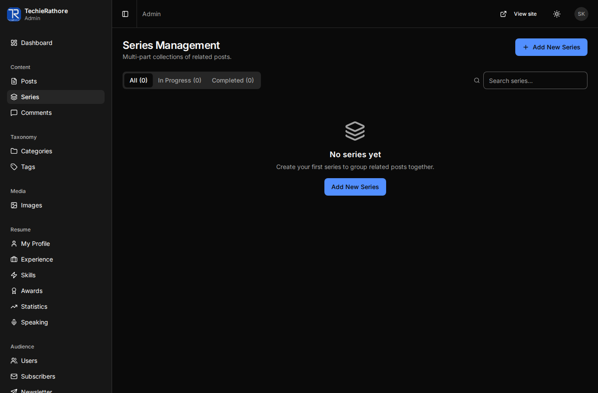
Runtime: renders empty. Seen 2026-11-02, as user 1 (Admin): 0 series on this database.
Roles: AuthorOrAbove on both source/BlogUI/Pages/AdminPages/SeriesList.razor:12 and ManageSeries.razor:12. No owner scoping (see Defects).
Call chain: SeriesList.razor:OnInitializedAsync (:238) → LoadSeriesAsync (:254) → SeriesSvc.GetAllWithCountsAsync (source/BlogEngine/Services/SeriesSvc.cs:161) → BlogSeriesRepo.GetAllWithCountsAsync (BlogSeriesRepo.cs:174, FROM BlogSeries s); delete: SeriesList.razor:DeleteSeriesAsync (:324) → SeriesSvc.DeleteSeriesAsync (:575) → BlogPostRepo.ClearSeriesFromPostsAsync → BlogSeriesRepo.DeleteAsync; editor: ManageSeries.razor.cs:OnParametersSetAsync (:46) → SeriesSvc.GetSeriesAsync (SeriesSvc.cs:193)
| File and line | Function | Watch | Expected value |
|---|---|---|---|
source/BlogUI/Pages/AdminPages/SeriesList.razor:258 | LoadSeriesAsync | ObjectList | every series with its post count (PostCount is a LEFT JOIN on published, non-deleted posts, BlogSeriesRepo.cs:42) |
source/BlogUI/Pages/AdminPages/SeriesList.razor:276 | ApplyFilter | FilteredList | status (inprogress, complete) then search over Name, Slug, AuthorName |
source/BlogUI/Pages/AdminPages/SeriesList.razor:324 | DeleteSeriesAsync | result.IsSuccess | series removed; its posts stay, with the series link cleared |
source/BlogUI/Pages/AdminPages/ManageSeries.razor.cs:46 | OnParametersSetAsync | PageObj | existing series for PageId > 0; PageId == 0 gives a new series with AuthorId set to the caller (:71-80) |
source/BlogUI/Pages/AdminPages/ManageSeries.razor.cs:100 | SaveDataAsync | result.IsSuccess | SaveSeriesAsync (:111), then ReorderPartsAsync (SeriesSvc.cs:342) when editing a series with more than one part; success goes to /admin/series |
Calculations on this screen: InProgressCount and CompleteCount (SeriesList.razor:227-228); Slug via SlugGenerator.EnsureSlug (SeriesSvc.cs:482-531).
Media library (/admin/images) and ImagePicker component#
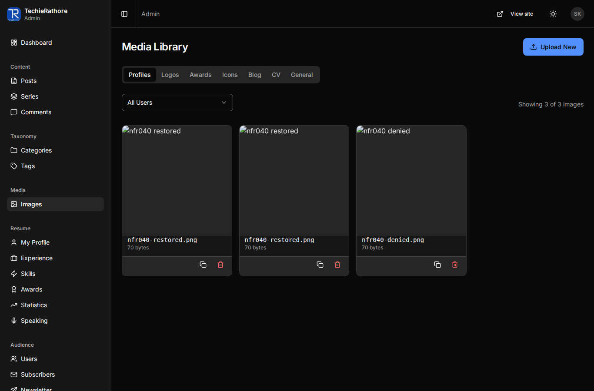
Runtime: renders. Seen 2026-11-02, as user 1 (Admin).
Roles: AdminOnly (source/BlogUI/Pages/AdminPages/ManageImages.razor:11). ImagePicker has no attribute and inherits its host page's policy.
Call chain: ManageImages.razor.cs:UploadFile (:342) → BlogImageService.UploadImageAsync (source/BlogEngine/Services/BlogImageService.cs:162) → ValidateImageAsync (:144) → StoreAsync (:309) → WriteBytesAsync (:367) → IFileStorage.SaveAsync (source/BlogEngine/Storage/FileSystemStorage.cs:92) → PersistMetadata (:473) → BlogImageRepo.InsertToGetId → BlogImage. Delete: ConfirmDelete (ManageImages.razor.cs:499) → DeleteImageAsync (BlogImageService.cs:184) → RemoveStoredFileAsync (:561) → DELETE FROM BlogImage (:585)
| File and line | Function | Watch | Expected value |
|---|---|---|---|
source/BlogUI/Pages/AdminPages/ManageImages.razor.cs:163 | LoadImages | AllImages | GetImagesByCategoryAsync (BlogImageService.cs:213), filtered by category and optional user |
source/BlogModel/Common/ImageCategoryRules.cs:193 | For (rule table) | MaxSizeBytes | profiles 2 MB, logos and awards 500 KB, icons 200 KB, blog and general 5 MB, cv 10 MB |
source/BlogEngine/Services/BlogImageService.cs:621 | ValidateAgainstConstraints | file.Size | over MaxSizeBytes is refused; the same value caps OpenReadStream (:413) |
source/BlogEngine/Services/BlogImageService.cs:176 | UploadImageAsync | relativePath | uploads/{category}/{category}-{userId}-{yyyyMMddHHmmss}-{8 hex}.{ext} (:641-649) under the storage root (source/BlogEngine/Storage/UploadsLocation.cs:82,130; host default wwwroot) |
source/BlogEngine/Services/BlogImageService.cs:196 | DeleteImageAsync | image.UserID | the owner id must equal the caller id; the page passes the owner id (ManageImages.razor.cs:509) |
Calculations on this screen: 12 per page, TotalPages = ceil(TotalImages / PageSize) (ManageImages.razor.cs:95-96). ImagePicker: OpenGallery (ImagePicker.razor.cs:86) lists the caller's own uploads (GetImagesByCategoryAsync(Category, UserId) at :94); SelectImage (:142) writes PageObj.FeaturedImage (ManagePost.razor:330).
Admin dashboard (/admin, aliases /AdminDashboard)#
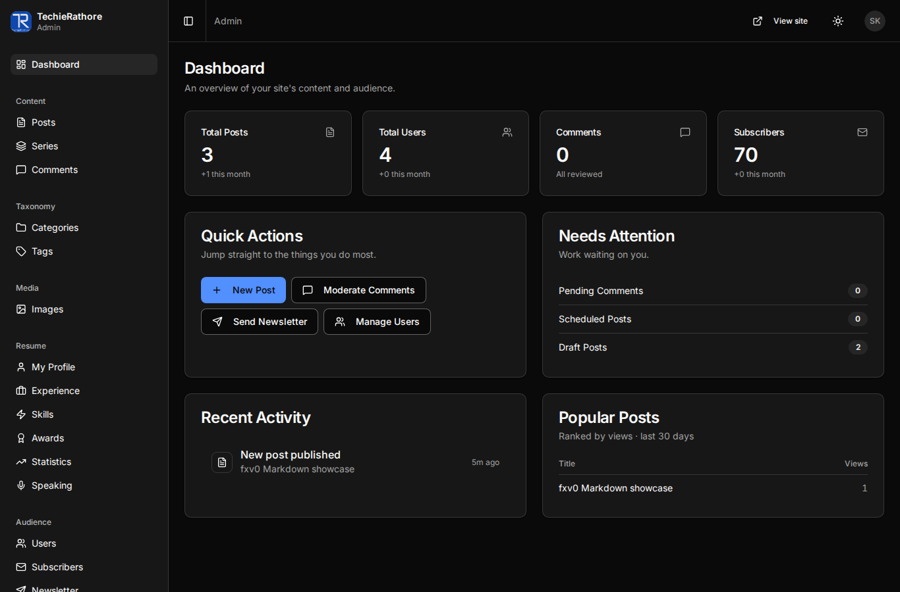
Runtime: renders. Seen 2026-11-02, as user 1 (Admin): live tiles (3 posts, 4 users, 0 comments, 70 subscribers).
Roles: EditorOrAbove (source/BlogUI/Pages/AdminPages/AdminDashboard.razor:13); the "Pending comments" and admin-only tiles sit inside AuthorizeView Policy="AdminOnly" (AdminDashboard.razor:107).
Call chain: AdminDashboard.razor.cs:OnInitializedAsync → DashboardSvc.GetAdminCountsAsync (source/BlogEngine/Services/DashboardSvc.cs:52) → AdminCountsRepo.GetAdminCountsAsync (source/BlogEngine/DbAccess/AdminCountsRepo.cs:119) → one scalar SELECT over BlogPost, BlogComment, BlogUser, Subscriber, Newsletter, PostViews, Tag, Category, BlogImage (SelectCountsSql, lines 72-88)
| File and line | Function | Watch | Expected value |
|---|---|---|---|
source/BlogUI/Pages/AdminPages/AdminDashboard.razor.cs:117 | OnInitializedAsync | counts | aggregate tiles populated in one read |
source/BlogUI/Pages/AdminPages/AdminDashboard.razor.cs:152-161 | ApplyCounts | PendingComments | = counts.UnAppComments (see Defects) |
source/BlogEngine/DbAccess/AdminCountsRepo.cs:77 | SelectCountsSql | UnAppComments | COUNT(*) WHERE Published = FALSE |
source/BlogUI/Pages/AdminPages/AdminDashboard.razor.cs:176-187 | LoadPostBreakdownAsync | DraftPosts, ScheduledPosts, PostsThisMonth | drafts = !Published && !IsScheduled; scheduled = IsScheduled; created since UTC month start |
source/BlogEngine/Services/AnalyticsSvc.cs:53 | GetPopularPostsAsync | PopularPosts | top posts by view count in the popular window (AnalyticsRepo.cs:187) |
Calculations on this screen: LoadPostBreakdownAsync partitions the post list into draft, scheduled and this-month counts. ApplyCounts is a straight copy. No other arithmetic.
User management (/users)#
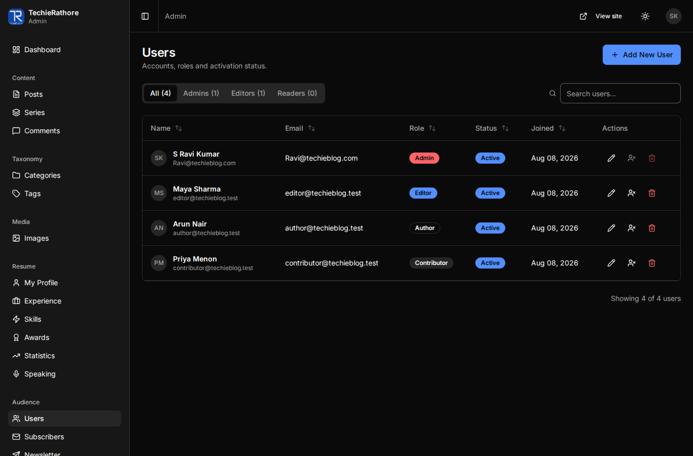
Runtime: renders. Seen 2026-11-02, as user 1 (Admin).
Roles: AdminOnly (source/BlogUI/Pages/AdminPages/UsersList.razor:11).
Call chain: UsersList.razor.cs:LoadUsers → BlogUserRepo.GetAllAsync (source/BlogEngine/DbAccess/BlogUserRepo.cs:151) → BlogUser (SelectAllSql, line 62; NotDeleted filter, line 818). Delete: ConfirmDelete → BlogUserRepo.SoftDeleteUserAsync (line 549) → SoftDeleteBlogUser() (source/BlogDb/PostgresScripts/030-UserAdminEditDelete.sql:174) → BlogUser.
| File and line | Function | Watch | Expected value |
|---|---|---|---|
source/BlogUI/Pages/AdminPages/UsersList.razor.cs:167-171 | LoadUsers | ObjectList | every non-deleted account, ordered by UserId |
source/BlogUI/Pages/AdminPages/UsersList.razor.cs:390-413 | SaveUserChanges | UserToEdit | BlogUserRepo.UpdateAsync writes name, email and role |
source/BlogUI/Pages/AdminPages/UsersList.razor.cs:524 | ConfirmDelete | deleted | soft delete: IsDeleted = TRUE, IsConfirmed = FALSE; row kept |
source/BlogUI/Pages/AdminPages/UsersList.razor.cs:577 | ToggleUserStatus | updated | SetBlogUserActive (030-UserAdminEditDelete.sql:85) flips IsConfirmed on live rows only |
source/BlogUI/Pages/AdminPages/UsersList.razor.cs:305-314 | DeleteBlockReason | reason | non-null for the site owner, so the delete is refused |
Calculations on this screen: role tab counts (AdminCount, EditorCount, ReaderCount) are in-page tallies of ObjectList. No other arithmetic.
Add user (/AddUser)#
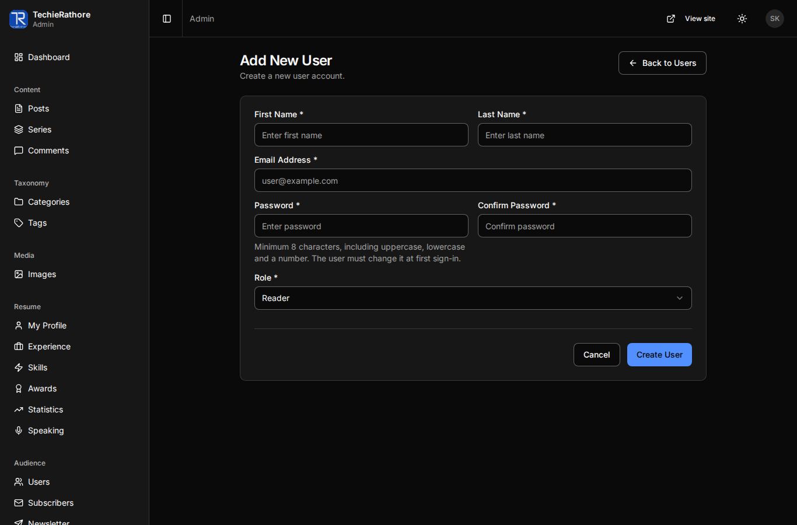
Runtime: renders. Seen 2026-11-02, as user 1 (Admin).
Roles: AdminOnly (source/BlogUI/Pages/AdminPages/AddUser.razor:18).
Call chain: AddUser.razor:HandleSubmit (line 197) → AuthSvc.CreateStaffAccountAsync (source/BlogEngine/Services/AuthSvc.cs:735) → BlogUserRepo.InsertToGetIdAsync (InsertBlogUser, BlogUserRepo.cs:69) → UpdatePasswordHashAsync (AuthSvc.cs:755) → {unresolved — credential table name not read}
| File and line | Function | Watch | Expected value |
|---|---|---|---|
source/BlogUI/Pages/AdminPages/AddUser.razor:199 | HandleSubmit | Password vs ConfirmPassword | mismatch rejected before the service call |
source/BlogEngine/Services/AuthSvc.cs:744-747 | CreateStaffAccountAsync | validation | required fields, PasswordValidator, email uniqueness |
source/BlogEngine/Services/AuthSvc.cs:750 | CreateStaffAccountAsync | userId | new BlogUser id; <= 0 is a failure |
source/BlogEngine/Services/AuthSvc.cs:755 | CreateStaffAccountAsync | MustChangePassword flag | set true on the new credential |
source/BlogUI/Pages/AdminPages/AddUser.razor:174 | field init | NewUser.UserRole | default "Reader" |
Calculations on this screen: none. Password hashing is PasswordHasher.HashPassword, called from AuthSvc.
Comment moderation (/CommentsList, alias /comments)#
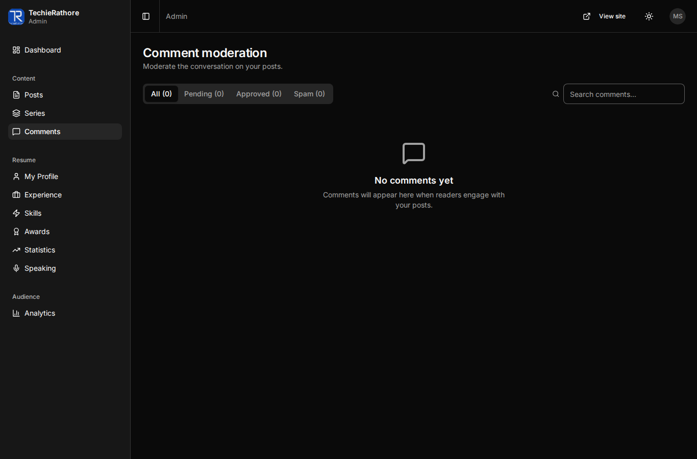
Runtime: renders empty. Seen 2026-11-02, as user 2 (Editor): 0 comments waiting.
Roles: EditorOrAbove (source/BlogUI/Pages/AdminPages/CommentsList.razor:12).
Call chain: CommentsList.razor:LoadCommentsAsync (line 371) → CommentSvc.GetAllCommentsAsync (source/BlogEngine/Services/CommentSvc.cs:733) → BlogCommentRepo.GetAllAsync (source/BlogEngine/DbAccess/BlogCommentRepo.cs, SelectAllSql line 42) → blogcomment
| File and line | Function | Watch | Expected value |
|---|---|---|---|
source/BlogUI/Pages/AdminPages/CommentsList.razor:378 | LoadCommentsAsync | comments | all comments, newest first |
source/BlogUI/Pages/AdminPages/CommentsList.razor:547 | ApproveCommentAsync | result | CommentSvc.ApproveCommentAsync (CommentSvc.cs:763) refuses unverified email, then ApproveBlogCommentAsync (BlogCommentRepo.cs:508) sets Approved, published = TRUE |
source/BlogUI/Pages/AdminPages/CommentsList.razor:484 | bulk apply | selectedIds | ApproveCommentsAsync → SetModerationStatusBulkAsync (BlogCommentRepo.cs:564) adds AND isemailverified = TRUE |
source/BlogUI/Pages/AdminPages/CommentsList.razor:568 | reject | status | RejectCommentAsync (CommentSvc.cs:515) → Spam, published = FALSE |
source/BlogUI/Pages/AdminPages/CommentsList.razor:616 | DeleteCommentAsync | row | CommentSvc.DeleteCommentAsync (CommentSvc.cs:801) → DELETE FROM blogcomment (BlogCommentRepo.cs:669) |
Calculations on this screen: ApprovedCount (line 312) counts Status == "Approved". Status mapping (lines 364-366) maps the stored moderation status to a label.
Category management (/admin/categories, alias /CategoriesList; edit /admin/category, /admin/category/{PageId})#
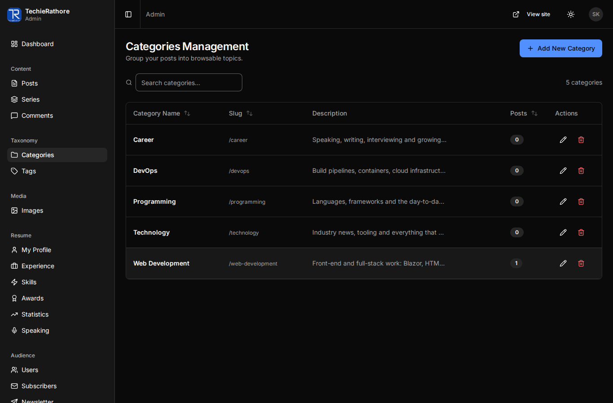
Runtime: renders. Seen 2026-11-02, as user 1 (Admin).
Roles: AdminOnly on both the list (source/BlogUI/Pages/AdminPages/CategoriesList.razor:12) and the edit page (ManageCategory.razor:12).
Call chain: CategoriesList.razor:LoadCategoriesAsync (line 220) → CategorySvc.GetAllWithCountsAsync (source/BlogEngine/Services/CategorySvc.cs:146, cached) → CategoryRepo.GetAllWithCountsAsync (source/BlogEngine/DbAccess/CategoryRepo.cs:130) → Category LEFT JOIN BlogPost. Delete: DeleteCategory (line 276) → CategorySvc.DeleteCategoryAsync (CategorySvc.cs:345) → CategoryRepo.DeleteAsync (line 320; DELETE FROM Category, line 90).
| File and line | Function | Watch | Expected value |
|---|---|---|---|
source/BlogUI/Pages/AdminPages/CategoriesList.razor:224 | LoadCategoriesAsync | ObjectList | categories with PostCount of published, non-deleted posts |
source/BlogEngine/DbAccess/CategoryRepo.cs:45-50 | SelectAllWithCountsSql | PostCount | COUNT(p.PostID) with Published = TRUE and not deleted |
source/BlogUI/Pages/AdminPages/CategoriesList.razor:280 | DeleteCategory | result | hard delete; list reloads |
source/BlogUI/Pages/AdminPages/ManageCategory.razor.cs:40 | OnParametersSetAsync | PageObj | GetCategoryAsync loads the row for edit |
source/BlogUI/Pages/AdminPages/ManageCategory.razor.cs:77 | SaveDataAsync | result | CategorySvc.SaveCategoryAsync (CategorySvc.cs:323) inserts or updates Category |
Calculations on this screen: PostCount (SQL, above). The delete dialog warns that PostCount posts become uncategorized, which matches ON DELETE SET NULL on blogpost_categoryid_fkey (source/BlogDb/PostgresScripts/023-CategoryAssignmentAndImageMetadata.sql:23).
Tag management (/admin/tags, alias /TagsList; edit /ManageTag, /ManageTag/{PageId})#
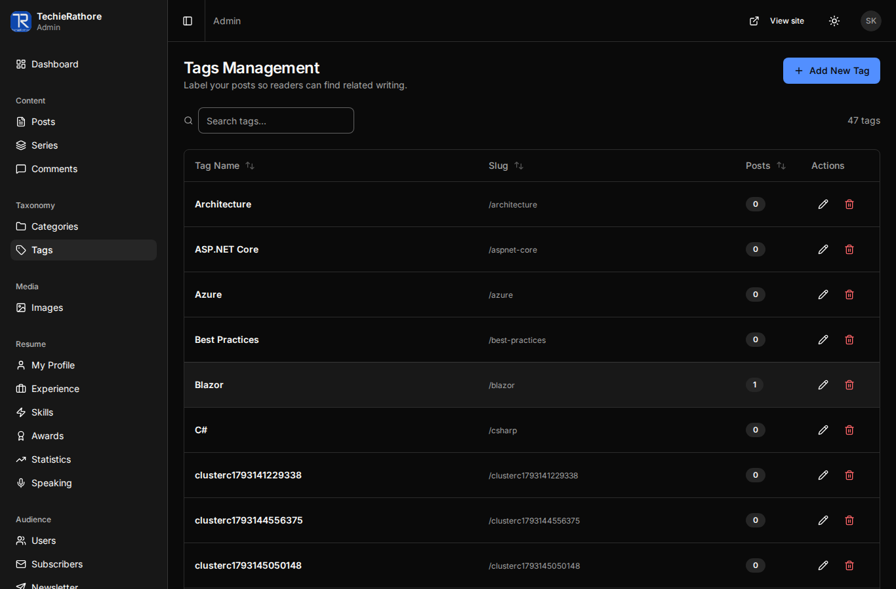
Runtime: renders. Seen 2026-11-02, as user 1 (Admin).
Roles: AdminOnly on both TagsList.razor:12 and ManageTag.razor:12.
Call chain: TagsList.razor:LoadTagsAsync (line 198) → TagSvc.GetAllWithCountsAsync (source/BlogEngine/Services/TagSvc.cs:165, cached) → BlogTagRepo.GetAllWithCountsAsync (source/BlogEngine/DbAccess/BlogTagRepo.cs:187) → Tag with PostTag count. Delete: TagsList.razor:253 → TagSvc.DeleteTagAsync (TagSvc.cs:487) → BlogTagRepo.DeleteAsync (BlogTagRepo.cs:389; DELETE FROM Tag, line 90) → Tag; PostTag rows cascade (source/BlogDb/PostgresScripts/007-FixBlogSeriesAndPostTag.sql:75).
| File and line | Function | Watch | Expected value |
|---|---|---|---|
source/BlogUI/Pages/AdminPages/TagsList.razor:202 | LoadTagsAsync | TagList | tags with PostCount |
source/BlogEngine/DbAccess/BlogTagRepo.cs:39 | SelectAllWithCountsSql | PostCount | COUNT(p.PostId) per tag |
source/BlogEngine/Services/TagSvc.cs:487-505 | DeleteTagAsync | existing | existence check, hard delete, taxonomy cache invalidated |
source/BlogUI/Pages/AdminPages/ManageTag.razor:134 | LoadTagAsync | pageObj | TagSvc.GetSingleTagAsync |
source/BlogUI/Pages/AdminPages/ManageTag.razor:170 | SaveDataAsync | result | TagSvc.SaveTagAsync (TagSvc.cs:458) |
Calculations on this screen: PostCount only, computed in SQL.
Subscribers (/admin/subscribers)#
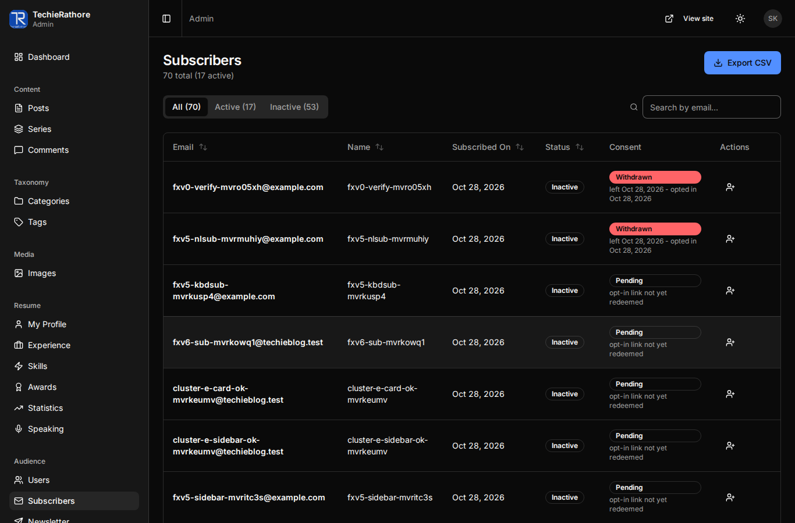
Runtime: renders. Seen 2026-11-02, as user 1 (Admin): 70 subscribers listed.
Roles: AdminOnly (source/BlogUI/Pages/AdminPages/SubscribersList.razor:11).
Call chain: SubscribersList.razor:LoadSubscribersAsync (line 259) → SubscriberSvc.GetAllSubscribersAsync (source/BlogEngine/Services/SubscriberSvc.cs:789) → SubscriberRepo.GetAllAsync (source/BlogEngine/DbAccess/SubscriberRepo.cs:264) → Subscriber. Deactivate: ToggleStatusAsync (line 316) → SubscriberSvc.UpdateSubscriberStatusAsync (SubscriberSvc.cs:892) → SubscriberRepo.UpdateStatusAsync (SubscriberRepo.cs:556) → UPDATE Subscriber SET IsConfirmed = @IsActive (line 236).
BRD-57 check: the admin path issues an UPDATE, never a DELETE. SubscriberRepo.cs has no DELETE statement, and no DELETE FROM Subscriber exists under source/BlogEngine or source/BlogDb. [Certain]
| File and line | Function | Watch | Expected value |
|---|---|---|---|
source/BlogUI/Pages/AdminPages/SubscribersList.razor:316-331 | ToggleStatusAsync | IsActive | flips the row; the row stays in the grid |
source/BlogEngine/Services/SubscriberSvc.cs:892-907 | UpdateSubscriberStatusAsync | subscriber | existence check, then UpdateStatusAsync; no delete |
source/BlogEngine/DbAccess/SubscriberRepo.cs:235-237 | UpdateStatusSql | IsConfirmed | the only write on this screen |
source/BlogUI/Pages/AdminPages/SubscribersList.razor:333-347 | ExportToCsv | csv | exports FilteredList (current tab plus search) as Email,Name,SubscribedOn,Status via SubscriberCsv.Build (source/BlogEngine/Common/SubscriberCsv.cs:44) |
Calculations on this screen: IsActive is COALESCE(IsConfirmed, TRUE) (SubscriberRepo.cs:59). SubscriberCsv.Quote (line 62) prefixes =+-@ with '.
Site settings (/settings)#
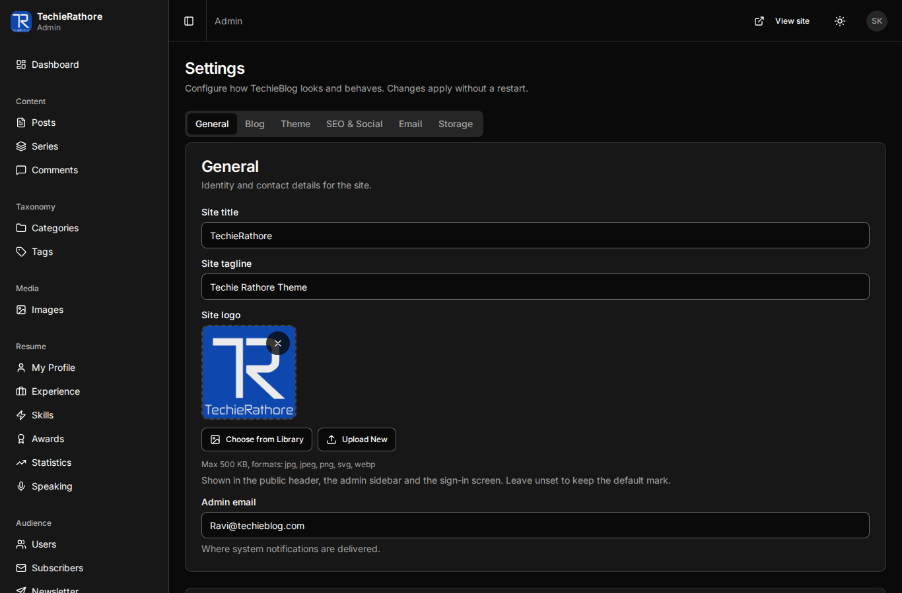
Runtime: renders. Seen 2026-11-02, as user 1 (Admin).
Roles: AdminOnly (source/BlogUI/Pages/AdminPages/Settings.razor:15).
Call chain: Settings.razor:SaveSettings (line 641) → SiteSettingsService.SaveSettingsAsync (source/BlogEngine/Services/SiteSettingsService.cs:260) → ISiteSettingRepo.UpsertManyAsync (source/BlogEngine/DbAccess/SiteSettingRepo.cs:285) → site settings rows → PublishChangeAsync (SiteSettingsService.cs:514) → InvalidateCache → GetSettingsAsync (line 196, cache key ServiceCache.SettingsEffectiveKey, tag Settings).
| File and line | Function | Watch | Expected value |
|---|---|---|---|
source/BlogUI/Pages/AdminPages/Settings.razor:178-179 | markup binding | settings.PostsPerPage | edits the page-local copy only |
source/BlogUI/Pages/AdminPages/Settings.razor:624-635 | OnThemeSelected | theme | ThemeService.PreviewTheme (source/BlogUI/Common/ThemeService.cs:246); preview only, not saved |
source/BlogUI/Pages/AdminPages/Settings.razor:656-666 | SaveSettings | result | persisted; then NotifySiteCacheRefreshAsync (the CacheNotifier.RefreshAsync call at line 754) |
source/BlogEngine/Common/SiteSettingsMapper.cs:259 | row mapping | PostsPerPage | written as one setting row |
source/BlogUI/Pages/BlogPages/CategoryArchive.razor:179 | page-size read | PageSize | GetSettingsAsync().PostsPerPage; same read in TagArchive.razor:171, SearchResults.razor:265, Newsletters.razor.cs:97 |
Calculations on this screen: none. Public cache: Settings.razor:711-713 evicts the Content, Taxonomy and Settings tags on "clear cache". The website's ISiteCacheNotifier is NullSiteCacheNotifier (source/BlogEngine/Services/NullSiteCacheNotifier.cs:27), so the post-save "live site" refresh reports NotApplicable. The home page does not read PostsPerPage: Home.razor.cs:34 fixes LatestArticleCount = 3.
Newsletter composer (/admin/newsletter)#
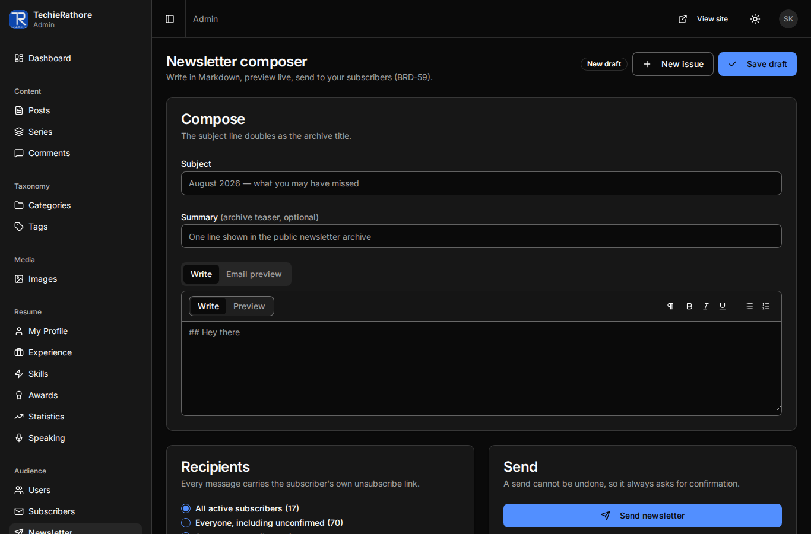
Runtime: renders. Seen 2026-11-02, as user 1 (Admin).
Roles: AdminOnly (source/BlogUI/Pages/AdminPages/NewsletterComposer.razor:20).
Call chain: Save: NewsletterComposer.razor.cs:SaveDraftAsync (line 267) → NewsletterSvc.SaveDraftAsync (source/BlogEngine/Services/NewsletterSvc.cs:173) → {unresolved — newsletter save SQL not read}. Send: ConfirmSendAsync (line 367) → NewsletterSvc.SendAsync (NewsletterSvc.cs:267) → DispatchAsync (line 591) → NewsletterRepo.GetRecipientsAsync (source/BlogEngine/DbAccess/NewsletterRepo.cs:422; SelectRecipientsSql, line 109) → Subscriber; then per recipient emailService.SendAsync (line 655) and a send-history row.
| File and line | Function | Watch | Expected value |
|---|---|---|---|
source/BlogUI/Pages/AdminPages/NewsletterComposer.razor.cs:381 | ConfirmSendAsync | dispatch | NewsletterService.SendAsync(NewsletterId, BuildAudience()); page polls history for progress |
source/BlogEngine/Services/NewsletterSvc.cs:273-274 | SendAsync | Status | refuses a newsletter already sent |
source/BlogEngine/DbAccess/NewsletterRepo.cs:111 | SelectRecipientsSql | recipients | COALESCE(IsConfirmed, FALSE) = TRUE unless IncludeInactive; capped by MaxRecipients (NewsletterRepo.cs:112) |
source/BlogUI/Pages/AdminPages/NewsletterComposer.razor.cs:420-434 | RefreshAudienceEstimate | EstimatedRecipients | counts subscribers (from GetAllSubscribersAsync, line 560); advisory only |
source/BlogEngine/Services/NewsletterSvc.cs:591-618 | DispatchAsync | report.SentCount, FailedCount | one send per recipient; TargetedCount = recipients fetched |
Calculations on this screen: SendProgressPercent (line 209) = SentSoFar * 100 / EstimatedRecipients, capped at 100. EstimatedRecipients is the client-side count described above.
Analytics dashboard (/admin/analytics)#
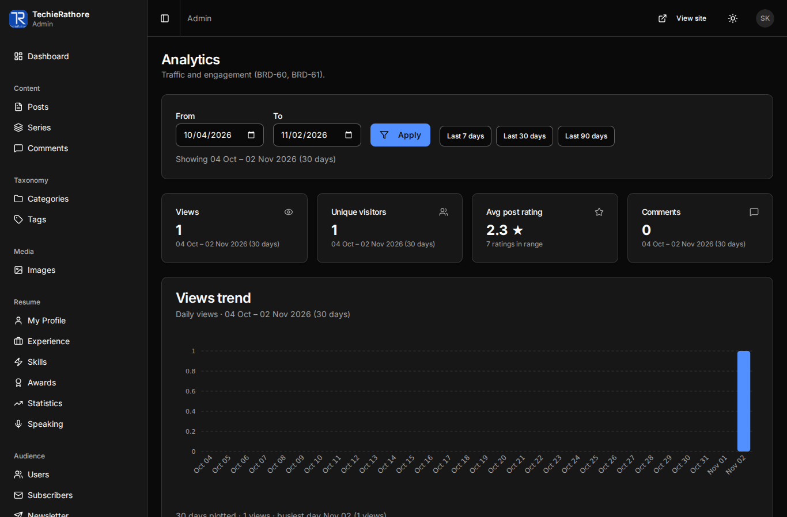
Runtime: renders. Seen 2026-11-02, as user 1 (Admin).
Roles: EditorOrAbove (source/BlogUI/Pages/AdminPages/AnalyticsDashboard.razor:21).
Call chain: AnalyticsDashboard.razor.cs:LoadAsync (line 276) → AnalyticsSvc.GetSummaryAsync (source/BlogEngine/Services/AnalyticsSvc.cs:190) → AnalyticsRepo.GetSummaryAsync (source/BlogEngine/DbAccess/AnalyticsRepo.cs:334; SelectSummarySql, line 147) → PostViews, BlogPost, BlogComment, PostRating. Trend, popular and category calls follow the same shape (AnalyticsSvc.cs:149, :128, :169).
| File and line | Function | Watch | Expected value |
|---|---|---|---|
source/BlogUI/Pages/AdminPages/AnalyticsDashboard.razor.cs:290 | LoadAsync | summary | totals for the applied range |
source/BlogUI/Pages/AdminPages/AnalyticsDashboard.razor.cs:291 | LoadAsync | trendPoints | one point per day, quiet days filled with zero |
source/BlogEngine/Services/AnalyticsSvc.cs:221-226 | OrderRange | (RangeStart, RangeEnd) | end date made inclusive (end.Date.AddDays(1)) |
source/BlogUI/Pages/AdminPages/AnalyticsDashboard.razor.cs:220-226 | ApplyPresetAsync | appliedFrom, appliedTo | UTC today back days - 1 |
source/BlogUI/Pages/AdminPages/AnalyticsDashboard.razor.cs:293-295 | LoadAsync | popularPosts, categoryEngagements | ranked lists, capped by PopularPostLimit and CategoryLimit |
Calculations on this screen: CategorySharePercent (AnalyticsDashboard.razor.cs:240) = TotalViews * 100 / leader, rounded to one decimal, 0 when there is no leader. FormatRating shows — for zero ratings.
Manage profile (/admin/profile)#
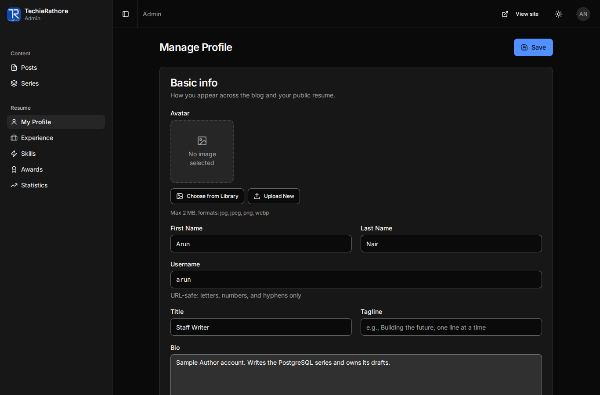
Runtime: renders. Seen 2026-11-02, as user 3 (Author).
Roles: Policy = "AuthorOrAbove" (source/BlogUI/Pages/AdminPages/ManageProfile.razor:11). Binds to the caller's own row via the PrimarySid claim. No admin user selector exists on this page (see note below the table).
Call chain: ManageProfile.razor.cs:SaveProfile → IBlogUserRepo.UpdateAsync / UpdateUsernameAsync / UpdateResumeFieldsAsync → BlogUserRepo → BlogUser
| File and line | Function | Watch | Expected value |
|---|---|---|---|
source/BlogUI/Pages/AdminPages/ManageProfile.razor.cs:122 | LoadProfile | CurrentUser | the signed-in user's BlogUser row (SelectBlogUserById, BlogUserRepo.cs:203) |
source/BlogUI/Pages/AdminPages/ManageProfile.razor.cs:256 | SaveProfile | UserRepo.UpdateAsync(CurrentUser) | names, avatar, bio, Twitter/LinkedIn/GitHub/Instagram written to BlogUser (BlogUserRepo.cs:260) |
source/BlogUI/Pages/AdminPages/ManageProfile.razor.cs:262 | SaveProfile | UpdateUsernameAsync | username written only when changed; UPDATE BlogUser SET Username (BlogUserRepo.cs:98) |
source/BlogUI/Pages/AdminPages/ManageProfile.razor.cs:277 | SaveProfile | resumeData.CVFilePath | CV path (picked via ImagePicker Category="cv", ManageProfile.razor:281) written by UpdateResumeFieldsSql (BlogUserRepo.cs:500) |
Calculations on this screen: username check (ManageProfile.razor.cs:182-219): regex ^[a-zA-Z0-9-]+$, length 3-50, and availability via IsUsernameAvailableAsync only when changed from the original.
Note: the brief names an "admin user selector" for this screen. ManageProfile.razor and .razor.cs contain no AllUsers, IsAdmin or Select. Only the Experience, Skills, Awards and Stats pages have one. [Certain]
Manage experience (/admin/experience, alias /admin/experience/{EventId})#
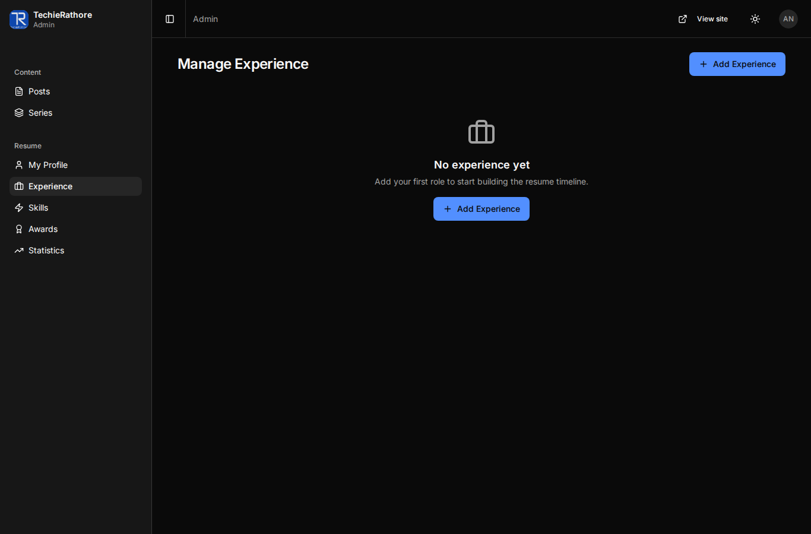
Runtime: renders. Seen 2026-11-02, as user 3 (Author).
Roles: Policy = "AuthorOrAbove" (source/BlogUI/Pages/AdminPages/ManageExperience.razor:12). Admins get a user picker (ManageExperience.razor:40-64, handler OnSelectedUserChanged at ManageExperience.razor.cs:283).
Call chain: ManageExperience.razor.cs:LoadData → IUserEventRepo.GetByUserAndTypeAsync → UserEventRepo → userevents
| File and line | Function | Watch | Expected value |
|---|---|---|---|
source/BlogUI/Pages/AdminPages/ManageExperience.razor.cs:219 | LoadData | ExperienceList | the Experience-typed rows for EffectiveUserId (UserEventRepo.cs:159; ordering comes from its SQL, not verified here) |
source/BlogUI/Pages/AdminPages/ManageExperience.razor.cs:425 | SaveExperience | EventRepo.UpdateAsync(CurrentEvent) | existing row updated (UserEventRepo.cs:268, UPDATE userevents) |
source/BlogUI/Pages/AdminPages/ManageExperience.razor.cs:431 | SaveExperience | EventRepo.InsertToGetIdAsync | new row inserted (UserEventRepo.cs:250, INSERT INTO userevents) |
source/BlogUI/Pages/AdminPages/ManageExperience.razor.cs:494 | DeleteExperience | EventRepo.DeleteAsync(EventID) | row removed (UserEventRepo.cs:285, DELETE FROM userevents) |
Calculations on this screen: new-entry DisplayOrder = count + 1 (ManageExperience.razor.cs:300). EndDate is set to today when IsCurrent (:419). "Reorder" is a free-typed number (ManageExperience.razor:266-276, DisplayOrderText at .razor.cs:148). There are no move-up/move-down controls on this screen.
Manage skills (/admin/skills)#
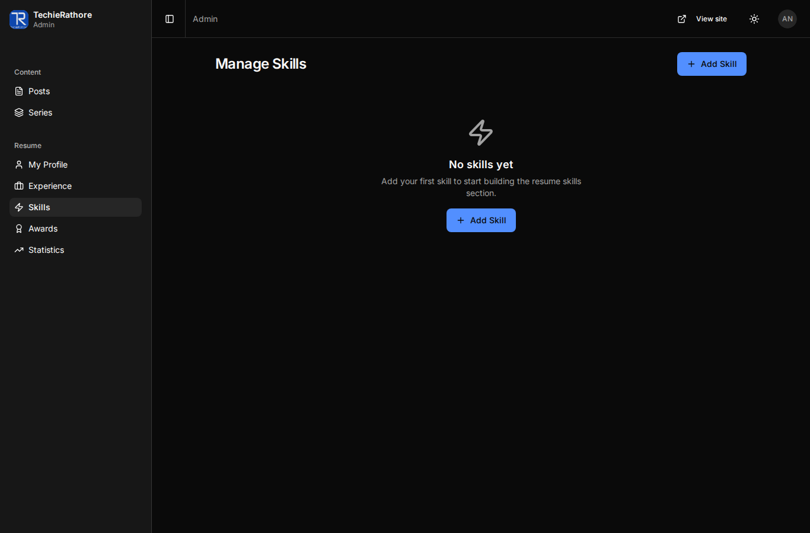
Runtime: renders. Seen 2026-11-02, as user 3 (Author).
Roles: Policy = "AuthorOrAbove" (source/BlogUI/Pages/AdminPages/ManageSkills.razor:11). Admin user picker at ManageSkills.razor:36-56.
Call chain: ManageSkills.razor.cs:LoadSkills → IUserSkillsRepo.GetByUserIdAsync → UserSkillsRepo → userskills
| File and line | Function | Watch | Expected value |
|---|---|---|---|
source/BlogUI/Pages/AdminPages/ManageSkills.razor.cs:148 | LoadSkills | AllSkills | the user's skills, grouped by category (UserSkillsRepo.cs:140) |
source/BlogUI/Pages/AdminPages/ManageSkills.razor.cs:295 | SaveNewSkill | SkillsRepo.CreateAsync(newSkill) | INSERT INTO userskills, DisplayOrder = max + 1 (UserSkillsRepo.cs:68) |
source/BlogUI/Pages/AdminPages/ManageSkills.razor.cs:630-660 | ApplyOrder | skill.DisplayOrder | category block renumbered 1..n, only changed rows written via SkillsRepo.UpdateAsync (UserSkillsRepo.cs:320) |
source/BlogUI/Pages/AdminPages/ManageSkills.razor.cs:418-424 | DeleteSkill | SkillsRepo.DeleteAsync(SkillId) | row removed (UserSkillsRepo.cs:337, DELETE FROM userskills) |
Calculations on this screen: category order is the minimum DisplayOrder of each group (ManageSkills.razor.cs:475). Category move calls SwapCategoryOrder (:527), then ApplyOrder.
Manage awards (/admin/awards)#
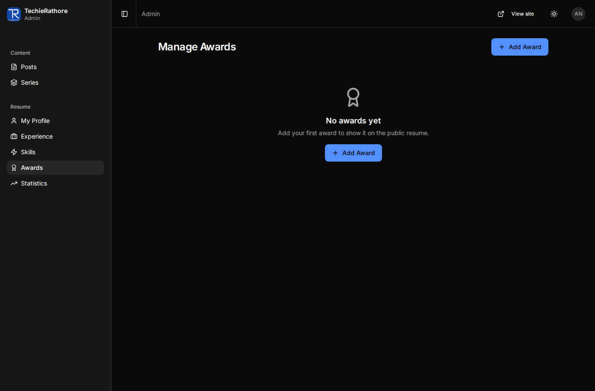
Runtime: renders. Seen 2026-11-02, as user 3 (Author).
Roles: Policy = "AuthorOrAbove" (source/BlogUI/Pages/AdminPages/ManageAwards.razor:11). Admin user picker at ManageAwards.razor:40-45.
Call chain: ManageAwards.razor.cs:LoadAwards → IUserAwardsRepo.GetByUserIdAsync → UserAwardsRepo → userawards
| File and line | Function | Watch | Expected value |
|---|---|---|---|
source/BlogUI/Pages/AdminPages/ManageAwards.razor.cs:144 | LoadAwards | AllAwards | the user's awards (UserAwardsRepo.cs:134) |
source/BlogUI/Pages/AdminPages/ManageAwards.razor.cs:317 | SaveAward | AwardsRepo.CreateAsync(newAward) | INSERT INTO userawards, DisplayOrder = max + 1 (UserAwardsRepo.cs:60) |
source/BlogUI/Pages/AdminPages/ManageAwards.razor.cs:434-437 | SwapAwardOrder | award.DisplayOrder | two rows swapped, both written by AwardsRepo.UpdateAsync (UserAwardsRepo.cs:274) |
source/BlogUI/Pages/AdminPages/ManageAwards.razor.cs:371 | DeleteAward | AwardsRepo.DeleteAsync(AwardId) | row removed (UserAwardsRepo.cs:291, DELETE FROM userawards) |
Calculations on this screen: YearRange is start-end, joined in SaveAward (ManageAwards.razor.cs:267-271). The badge image comes from ImagePicker Category="awards" (ManageAwards.razor:213).
Manage speaking (/admin/speaking)#
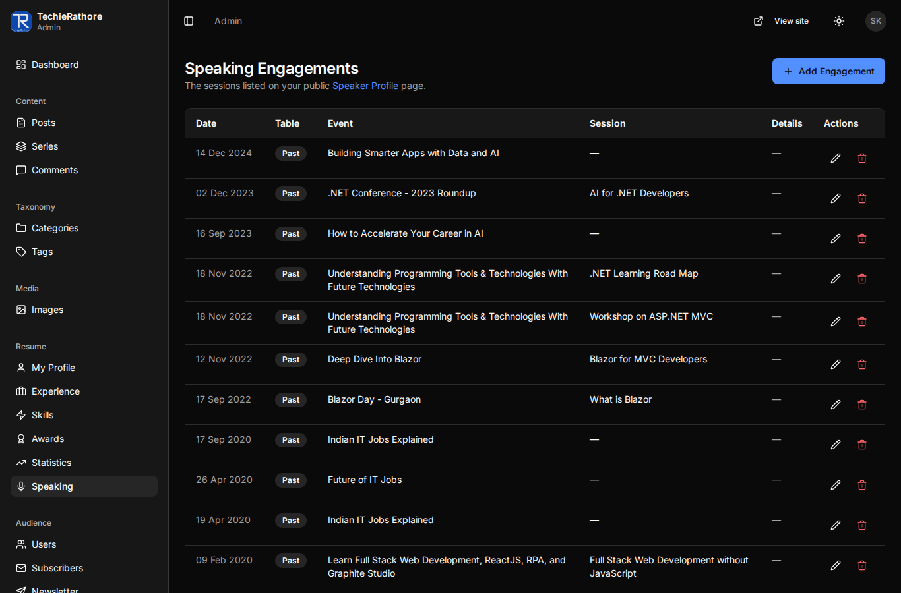
Runtime: renders. Seen 2026-11-02, as user 1 (Admin).
Roles: Policy = "EditorOrAbove" (source/BlogUI/Pages/AdminPages/ManageSpeaking.razor:15). Rows belong to the site owner, not the signed-in user.
Call chain: ManageSpeaking.razor.cs:LoadEngagementsAsync → IBlogUserRepo.GetSiteOwnerAsync → BlogUserRepo → BlogUser, then IUserEventRepo.GetByUserAndTypeAsync → userevents
| File and line | Function | Watch | Expected value |
|---|---|---|---|
source/BlogUI/Pages/AdminPages/ManageSpeaking.razor.cs:134 | LoadEngagementsAsync | siteOwner | the one BlogUser with IsSiteOwner = TRUE (BlogUserRepo.cs:383, SelectSiteOwnerSql at :88) |
source/BlogUI/Pages/AdminPages/ManageSpeaking.razor.cs:144-146 | LoadEngagementsAsync | engagements | EventType = Speaking rows, newest EventDate first (UserEventRepo.cs:159) |
source/BlogUI/Pages/AdminPages/ManageSpeaking.razor.cs:260 | SaveEngagement | EventRepo.InsertAsync(row) | new userevents row, UserID = owner (UserEventRepo.cs:250) |
source/BlogUI/Pages/AdminPages/ManageSpeaking.razor.cs:369 | ConfirmDelete | EventRepo.DeleteAsync(EventID) | row removed (UserEventRepo.cs:285) |
Calculations on this screen: StartDate and IsCurrent are forced to null and false (ManageSpeaking.razor.cs:255-256). RegistrationUrl is kept only for upcoming rows (:249-251).
Manage stats (/admin/stats)#
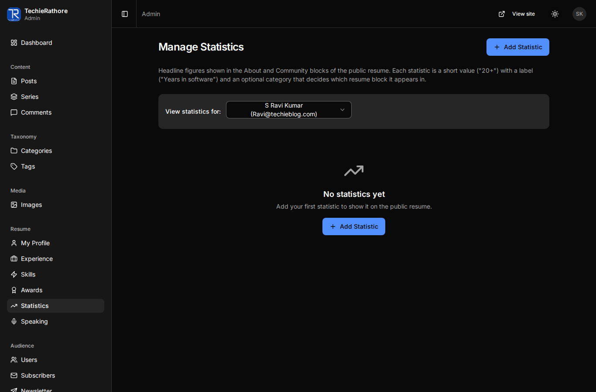
Runtime: renders. Seen 2026-11-02, as user 1 (Admin).
Roles: Policy = "AuthorOrAbove" (source/BlogUI/Pages/AdminPages/ManageStats.razor:14). Admin user picker at ManageStats.razor:49-54 (ValueChanged → OnSelectedUserChangedAsync, ManageStats.razor.cs:227).
Call chain: ManageStats.razor.cs:LoadStatsAsync → UserStatsSvc.GetStatsForUserAsync → IUserStatsRepo.GetByUserIdAsync → UserStatsRepo → userstats
| File and line | Function | Watch | Expected value |
|---|---|---|---|
source/BlogUI/Pages/AdminPages/ManageStats.razor.cs:216 | LoadStatsAsync | AllStats | the selected user's stats (UserStatsSvc.cs:116, UserStatsRepo.cs:132) |
source/BlogUI/Pages/AdminPages/ManageStats.razor.cs:305 | SaveStatAsync | result | UserStatsSvc.SaveStatAsync → CreateAsync (UserStatsSvc.cs:232, INSERT at UserStatsRepo.cs:60) or UpdateAsync (UserStatsRepo.cs:295) |
source/BlogUI/Pages/AdminPages/ManageStats.razor.cs:441 | MoveStatAsync | ReorderStatsAsync | renumbered 0..n (UserStatsSvc.cs:384) |
source/BlogUI/Pages/AdminPages/ManageStats.razor.cs:374 | DeleteStatAsync | DeleteStatAsync(StatId) | row removed (UserStatsSvc.cs:334, UserStatsRepo.cs:313, DELETE FROM userstats) |
Calculations on this screen: new DisplayOrder = max + 1 (ManageStats.razor.cs:463). Move up/down swaps positions in the ordered list (:438-439) and reorders through the service.
BlogApp connection setup (/blogapp/connection, alias /blogapp/connection/settings)#
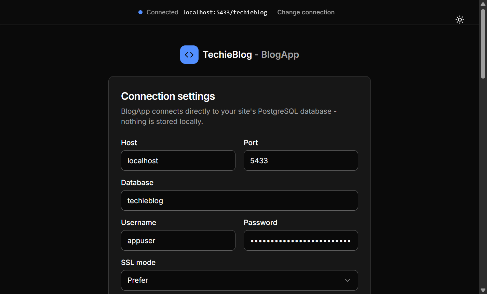
Runtime: renders. Seen 2026-11-02, BlogApp desktop head driven over its own WebView2 DevTools port: "Connection settings".
Roles: public within BlogApp. No [Authorize] attribute (source/BlogApp/Components/Pages/ConnectionSetup.razor:17-18).
Call chain: ConnectionSetup.razor.cs:SaveAndContinue → ConnectionProbe.TestAsync → Npgsql open, then IConnectionStore.SaveAsync → ConnectionStore → SecureStorage, DPAPI file fallback (no SQL table)
| File and line | Function | Watch | Expected value |
|---|---|---|---|
source/BlogApp/Components/Pages/ConnectionSetup.razor.cs:288 | TestMediaLocation | MediaLocationProbe.TestAsync(Settings) | Sftp → TestSftpAsync, Folder → TestFolderAsync, None → "nothing to test" (source/BlogApp/Services/MediaLocationProbe.cs:127-147) |
source/BlogApp/Components/Pages/ConnectionSetup.razor.cs:329 | TestConnection | probeResult | read-only probe; success message verbatim (source/BlogApp/Services/ConnectionProbe.cs:91) |
source/BlogApp/Components/Pages/ConnectionSetup.razor.cs:385 | SaveAndContinue | Settings.HasUsableSecrets() | JWT key ≥ AppSecrets.MinimumJwtSigningKeyLength, encryption key ≥ MinimumEncryptionKeyLength (source/BlogApp/Services/ConnectionSettings.cs:459-464) |
source/BlogApp/Components/Pages/ConnectionSetup.razor.cs:402 | SaveAndContinue | ConnectionStore.SaveAsync(Settings) | written encrypted (source/BlogApp/Services/ConnectionStore.cs:175-179, DataProtectionScope.CurrentUser) |
source/BlogApp/Components/Pages/ConnectionSetup.razor.cs:443 | ForgetConnection | ConnectionStore.ClearAsync() | stored credential removed, app restarts to setup |
Calculations on this screen: SftpPort defaults when blank (ConnectionSetup.razor.cs:260). A non-numeric port becomes 0 (:195). IsBusy blocks all actions.
BlogApp start (/blogapp/start)#
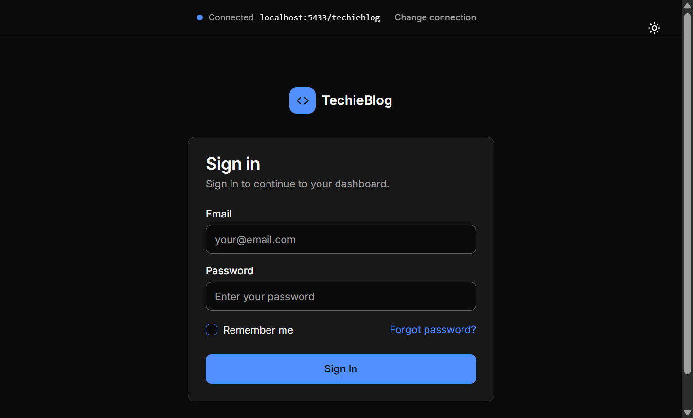
Runtime: redirects. Seen 2026-11-02, BlogApp desktop head, signed out: lands on /login as designed (screenshot is the destination).
Roles: none. Any state is accepted. Anonymous goes to /login, signed-in goes to the role landing route (source/BlogApp/Components/Pages/DesktopStart.razor:22).
Call chain: DesktopStart.razor:OnAfterRenderAsync → ResolveDestinationAsync → AuthenticationStateProvider → RoleLandingRoutes.ResolveFor (no data access, no SQL)
| File and line | Function | Watch | Expected value |
|---|---|---|---|
source/BlogApp/Components/Pages/DesktopStart.razor:79 | OnAfterRenderAsync | hasNavigated | guard so the redirect runs once, on first render only |
source/BlogApp/Components/Pages/DesktopStart.razor:113-116 | ResolveDestinationAsync | state.User.Identity.IsAuthenticated | false → AnonymousDestination (/login, :57) |
source/BlogApp/Components/Pages/DesktopStart.razor:121-122 | ResolveDestinationAsync | role | RoleLandingRoutes.ResolveFor(role); a blank role maps to the public home |
source/BlogApp/Components/Pages/DesktopStart.razor:88 | OnAfterRenderAsync | NavigationManager.NavigateTo(destination, replace: true) | replaces the history entry, so Back does not return here |
Calculations on this screen: role to route mapping only (RoleLandingRoutes.ResolveFor). Any exception falls back to /login (DesktopStart.razor:124-127).
Cross-cutting flows#
Sign-in#
Call chain: LoginPage.razor:26 EditForm → LoginPage.razor.cs:ValidateUser (:136) → TechieBlog/Services/AuthService.cs:LoginAsync (:89, encrypt :91-92) → AuthSvc.AppLoginAsync (BlogEngine/Services/AuthSvc.cs:153) → AuthenticateAsync (:270) → PasswordHasher.Verify (BlogModel/Common/PasswordHasher.cs:163) → AuthSvc.IssueSessionAsync (AuthSvc.cs:383) → GenerateJWToken (:687) → userlogins insert (UserLoginRepo.cs:52) → decrypt TechieBlog/Services/AuthService.cs:99 → LoginPage.razor.cs:161 CustomAuthStateProvider.MarkUserAsAuthenticated (source/BlogUI/Common/CustomAuthStateProvider.cs:324) → local storage AppConstants.AccessKey / RefreshKey (source/BlogModel/Common/AppConstants.cs:89, CustomAuthStateProvider.cs:326-327) → session cookie (:328) → NotifyAuthenticationStateChanged (:331) → LoginPage.razor.cs:162 ResolveDestination (:188)
| Break point (file and line) | What breaks | Result |
|---|---|---|
AuthService.cs:91-92 encrypt, AuthSvc.cs:157-158 decrypt | key mismatch between host and engine | AppLoginAsync gets null credentials and refuses; visitor sees "Invalid email or password." |
AuthSvc.cs:161 throttle | account locked | refused before the password check; the attempt is still audited (:166) |
AuthSvc.cs:280 and :286-300 | wrong password, unknown address, deactivated (IsConfirmed false) | all return the same null; an unconfirmed account is only refused after the password check |
IssueSessionAsync AuthSvc.cs:387 | userlogins insert fails | exception; ValidateUser catch shows "An error occurred during login." (LoginPage.razor.cs:166) |
CustomAuthStateProvider.cs:206 read on later circuits | JS interop unavailable (static prerender) | ReadPrerenderIdentity (:229, :434) uses the server cookie identity |
CustomAuthStateProvider.cs:263 ResolveSessionUserAsync | access token expired | AuthSvc.RefreshTokenAsync (:293) reissues from the UserLogin row; if that fails the session ends |
Signature warning [Certain]: AuthSvc.cs:49-52 and :428-436 state the JWT signature is never verified on the way in. Session validity is the exact-token lookup in UserLogin (GetUserByTokenAsync, AuthSvc.cs:441-476). A claim read from the token must never be trusted.
Scheduled publishing#
Schedule write: ManagePost.razor.cs:HandleSchedule (:772, future check :784, UTC :838) → BlogSvc.SchedulePostAsync (source/BlogEngine/Services/BlogSvc.cs:900, sets ScheduledPublishOn, forces Published = false, :908-909) → SavePostAsync → BlogPostRepo.UpdateAsync (BlogPostRepo.cs:218-232).
Hosted service: source/BlogEngine/Services/ScheduledPostPublisher.cs:64 (BackgroundService), registered at source/BlogEngine/BlogSvcInitializer.cs:201 with AddHostedService. checkInterval = 1 min (:68); ExecuteAsync at :105; 10 s startup delay (:110); loop and Task.Delay(checkInterval) at :112-123.
Tick: PublishDuePosts (:151) opens a scope (:155) → BlogSvc.GetDueScheduledPostsAsync (BlogSvc.cs:871, DateTime.UtcNow) → BlogPostRepo.GetDueScheduledPostsAsync (BlogPostRepo.cs:794) → SelectDueScheduledSql (:306-316: Published = FALSE AND ScheduledPublishOn <= @Now) → per post :172-177: Published = true, PublishedOn = ScheduledPublishOn, ScheduledPublishOn = null, blogSvc.UpdatePostAsync(post) (BlogSvc.cs:571).
| Break point (file and line) | What breaks | Result |
|---|---|---|
ScheduledPostPublisher.cs:118-121 | an exception escapes a tick | logged; loop continues (:123) |
ScheduledPostPublisher.cs:192-197 | one post fails to save | logged; the rest of the batch still publishes |
ScheduledPostPublisher.cs:200-203 | the due-list read fails | logged; BlogSvc.GetDueScheduledPostsAsync returns empty (BlogSvc.cs:877-880) |
ScheduledPostPublisher.cs:31-39 | two host instances | no cross-process lock; both tick; second finds nothing due, but a row can be double-written |
BlogPostRepo.cs:307-309 projection | scheduled part of a series | SeriesId and SeriesPartNumber are not selected, then written back as NULL (see Defects, D1) |
Configuration, logging, errors#
- AppDbConString read:
source/TechieBlog/Program.cs:287(falls back toConnectionStrings:Default,:288; throws:290if both missing). BlogApp:source/BlogApp/MauiProgram.cs:60. - DbUp migration at startup:
source/TechieBlog/Program.cs:547-561(new BlogDbSvc().UpgradeDatabase,:552); enginesource/BlogDb/BlogDbSvc.cs:52(DeployChanges.To). Scripts insource/BlogDb/PostgresScripts/. A failed migration logs an error but the host still starts (:555-558). - Required secrets check:
source/TechieBlog/Program.cs:235AppSecrets.Initialise(builder.Configuration); implementationsource/BlogModel/Common/AppSecrets.cs:180. Missing value throws, host exits 1 (source/TechieBlog/Program.cs:833-838). BlogApp equivalent:ConnectionSettings.cs:459-464. - Serilog: bootstrap logger
source/TechieBlog/Program.cs:49;Log.Loggerbuilt:141;builder.Host.UseSerilog():253; request logging:665. File sink:126. Unobserved task exceptions:source/TechieBlog/Observability/GlobalExceptionLogging.cs:115. BlogApp:source/BlogApp/MauiProgram.cs:173-179. - Global error handling:
source/TechieBlog/Program.cs:578UseExceptionHandler("/Error")(non-Development);:620status-code re-execute toNotFoundPage. Blazor error boundary:source/BlogUI/Routes.razor:19; BlogApp:source/BlogApp/Components/Routes.razor:21. - Content cache:
source/BlogEngine/Services/MemoryCacheService.cs:96default lifetime 10 minutes (absolute,:168), tag-invalidated in-process only. Public reads taggedCacheTags.Contentinsource/BlogEngine/Services/BlogSvc.cs:44-47. Output cachePublicListingexpires 5 minutes (source/TechieBlog/Program.cs:373). The website's cross-process notifier is a no-op (source/TechieBlog/Program.cs:534). Net effect: a row written directly in psql stays hidden from cached listings until the 10-minute entry expires or the host restarts. [Likely] - DI registration of main services:
source/BlogEngine/BlogSvcInitializer.cs:94-205(repos transient withdbConnectionString;AuthSvc:139,BlogSvc:143,UserStatsSvc:180,ICacheServicesingleton:112,IBlogImageServicescoped:186). Called fromsource/TechieBlog/Program.cs:295. Host-only registrations:source/TechieBlog/Program.cs:301(cache decorator),:346(output cache),:522(IAuthService),:534(ISiteCacheNotifier).
Known issues#
Found while mapping on 2026-11-02. "By reading" means read in the code, not reproduced; each needs *triage-issues before a fix.
- Posts-list search and row Delete crash the page for an Admin (reproduced 5 of 5). User 1 →
/BlogsList→ type inposts-search, or click a row's Delete → "Something went wrong".RuntimeBinderExceptionin TrBlazeUI 2.2.1SelectValue.GetSelectedText, from the bulk-action Select (BlogsList.razor:265). TR-077. REQ-UI-017 (now Needs re-verify). - D3 — an Author could open and edit any post — FIXED 2026-11-05.
ManagePost.razor.csandPreviewPost.razorloaded by id with no owner check, and saving handed the post to whoever saved it. Both now applyPostAccess.CanEdit(BlogModels): an Admin or Editor edits any post, anyone else only their own, and an existing post keeps its owner. Proof:tests/verify/triage-20261105-post-ownership.spec.ts,tests/unit/Security/PostAccessTests.cs. REQ-UI-016. - The same
Selectcrash once in the post editor, 8 s after a publish. Not reproduced there. TR-077. REQ-UI-016. - D1 — scheduled publish drops series membership (by reading).
BlogPostRepo.cs:307-309omitsSeriesId/SeriesPartNumber; written back as NULL at:229-230. REQ-FN-016. - D2 — Save Draft keeps the schedule (likely).
ManagePost.razor.cs:688,BlogSvc.cs:694-702. REQ-FN-016. - D6 — the title overwrites a hand-typed slug on a new post (by reading).
ManagePost.razor.cs:475-478. REQ-UI-016. - Search filters do nothing (by reading). Category, date and sort are bound but not applied (
SearchResults.razor:43-77,:261-291); rating hard-coded 0 (:289). REQ-UI-011. - Post-page tag links can miss the archive (by reading).
PostView.razor:304builds the slug withGetSlug(:749-757), notSlugGenerator.GenerateSlug; "ASP.NET" →/tag/asp.net, stored asaspnet. REQ-UI-007. - RSS page Copy button never copies (by reading), yet shows "copied".
RssFeed.razor:164-174. REQ-UI-046. - D7 — "Remember me" is never read (by reading).
LoginPage.razor:65,:96. REQ-UI-001. - D8 — the reset-success message is never shown (by reading).
ResetPasswordPage.razor:190sends?message=; nothing reads it. REQ-UI-003. - Dashboard "Pending Comments" counts rejected and spam (by reading).
AdminCountsRepo.cs:77countsPublished = FALSE. REQ-FN-036. - D4, D5 — series admin is not owner-scoped; a stale series URL creates a new series (likely).
SeriesList.razor:258,SeriesSvc.cs:482-600;ManageSeries.razor.cs:51-56. REQ-UI-024. - Award up/down does nothing when two awards share an order number (likely).
ManageAwards.razor.cs:432-434. REQ-UI-039. - Minor, by reading: Publish Now leaves
ScheduledPublishOnset (BlogSvc.cs:719-737); Add user writes the user and its password in two calls with no transaction (AuthSvc.cs:750,:755); the comment queue loads each comment's post one by one (CommentsList.razor:384); a NULLSubscriber.IsConfirmedshows Active but is excluded from counts and sends (SubscriberRepo.cs:59vsAdminCountsRepo.cs:83). About.razor:81-98links GitHub, Twitter and LinkedIn to the sites' home pages, not the owner's profiles.- Open checklist rows: REQ-UI-025, REQ-FN-031, REQ-UI-047 are
Needs re-verify.